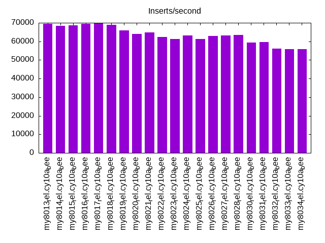
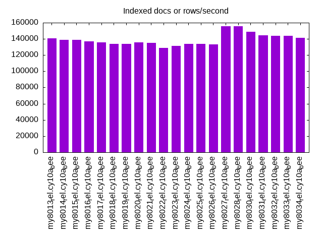
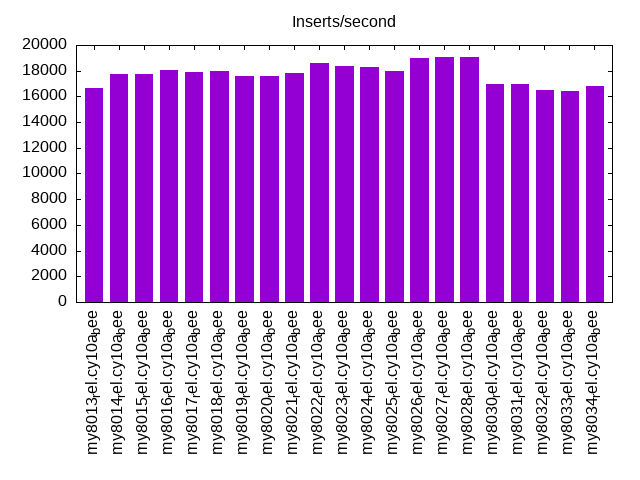
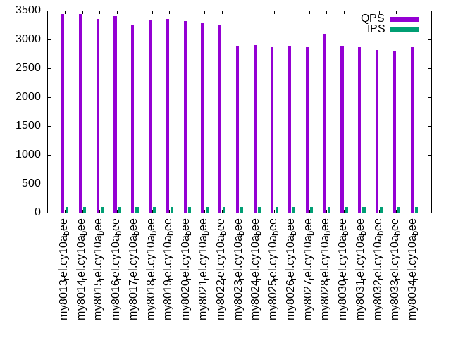
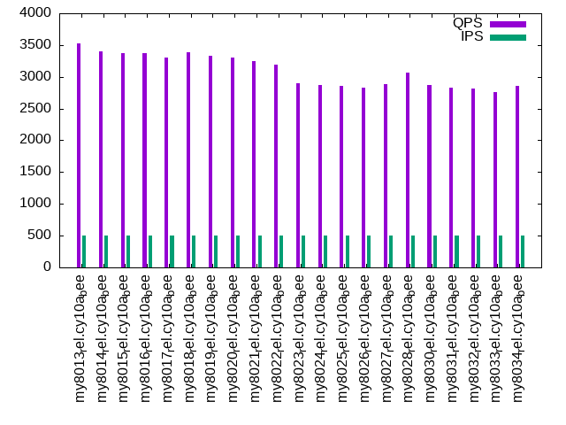
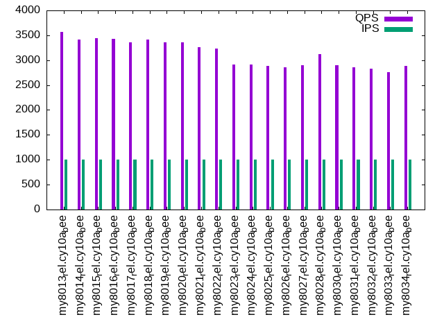

This is a report for the insert benchmark with 20M docs and 1 client(s). It is generated by scripts (bash, awk, sed) and Tufte might not be impressed. An overview of the insert benchmark is here and a short update is here. Below, by DBMS, I mean DBMS+version.config. An example is my8020.c10b40 where my means MySQL, 8020 is version 8.0.20 and c10b40 is the name for the configuration file.
The test server has 8 AMD cores, 16G RAM and an NVMe SSD. It is described here as the Beelink. The benchmark was run with 1 client and there were 1 or 3 connections per client (1 for queries or inserts without rate limits, 1+1 for rate limited inserts+deletes). There is 1 table. It loads 20M rows without secondary indexes, creates secondary indexes, then inserts 50M rows with a delete per insert to avoid growing the table. It then does 3 read+write tests for 1200s each that do queries as fast as possible with 100, 500 and then 1000 inserts/second/client concurrent with the queries and 1000 deletes/second to avoid growing the table. The database is (or should be) cached by InnoDB.
The tested DBMS are:
The numbers are inserts/s for l.i0 and l.i1, indexed docs (or rows) /s for l.x and queries/s for q100, q500, q1000. The values are the average rate over the entire test for inserts (IPS) and queries (QPS). The range of values for IPS and QPS is split into 3 parts: bottom 25%, middle 50%, top 25%. Values in the bottom 25% have a red background, values in the top 25% have a green background and values in the middle have no color. A gray background is used for values that can be ignored because the DBMS did not sustain the target insert rate. Red backgrounds are not used when the minimum value is within 80% of the max value.
| dbms | l.i0 | l.x | l.i1 | q100.1 | q500.1 | q1000.1 |
|---|---|---|---|---|---|---|
| my8013_rel.cy10a_bee | 69444 | 140559 | 16667 | 3438 | 3522 | 3568 |
| my8014_rel.cy10a_bee | 68493 | 138621 | 17756 | 3434 | 3400 | 3413 |
| my8015_rel.cy10a_bee | 68728 | 138621 | 17705 | 3353 | 3367 | 3437 |
| my8016_rel.cy10a_bee | 69444 | 136735 | 18057 | 3405 | 3376 | 3423 |
| my8017_rel.cy10a_bee | 69930 | 135811 | 17870 | 3245 | 3297 | 3357 |
| my8018_rel.cy10a_bee | 68966 | 134000 | 17992 | 3328 | 3383 | 3417 |
| my8019_rel.cy10a_bee | 66007 | 134000 | 17606 | 3354 | 3328 | 3356 |
| my8020_rel.cy10a_bee | 64102 | 135811 | 17606 | 3321 | 3306 | 3362 |
| my8021_rel.cy10a_bee | 64725 | 134899 | 17813 | 3283 | 3250 | 3260 |
| my8022_rel.cy10a_bee | 62500 | 128846 | 18567 | 3241 | 3191 | 3227 |
| my8023_rel.cy10a_bee | 61350 | 131372 | 18382 | 2895 | 2897 | 2913 |
| my8024_rel.cy10a_bee | 63091 | 134000 | 18282 | 2900 | 2867 | 2908 |
| my8025_rel.cy10a_bee | 61350 | 134000 | 17940 | 2869 | 2855 | 2881 |
| my8026_rel.cy10a_bee | 62893 | 133112 | 19004 | 2875 | 2832 | 2855 |
| my8027_rel.cy10a_bee | 63291 | 155814 | 19069 | 2871 | 2880 | 2897 |
| my8028_rel.cy10a_bee | 63492 | 155814 | 19077 | 3100 | 3062 | 3124 |
| my8030_rel.cy10a_bee | 59347 | 148889 | 16949 | 2876 | 2872 | 2894 |
| my8031_rel.cy10a_bee | 59524 | 144604 | 16932 | 2864 | 2836 | 2858 |
| my8032_rel.cy10a_bee | 56180 | 143571 | 16469 | 2822 | 2816 | 2829 |
| my8033_rel.cy10a_bee | 55710 | 143571 | 16415 | 2794 | 2753 | 2762 |
| my8034_rel.cy10a_bee | 55710 | 141549 | 16773 | 2860 | 2852 | 2891 |
This table has relative throughput, throughput for the DBMS relative to the DBMS in the first line, using the absolute throughput from the previous table. Values less than 0.95 have a yellow background. Values greater than 1.05 have a blue background.
| dbms | l.i0 | l.x | l.i1 | q100.1 | q500.1 | q1000.1 |
|---|---|---|---|---|---|---|
| my8013_rel.cy10a_bee | 1.00 | 1.00 | 1.00 | 1.00 | 1.00 | 1.00 |
| my8014_rel.cy10a_bee | 0.99 | 0.99 | 1.07 | 1.00 | 0.97 | 0.96 |
| my8015_rel.cy10a_bee | 0.99 | 0.99 | 1.06 | 0.98 | 0.96 | 0.96 |
| my8016_rel.cy10a_bee | 1.00 | 0.97 | 1.08 | 0.99 | 0.96 | 0.96 |
| my8017_rel.cy10a_bee | 1.01 | 0.97 | 1.07 | 0.94 | 0.94 | 0.94 |
| my8018_rel.cy10a_bee | 0.99 | 0.95 | 1.08 | 0.97 | 0.96 | 0.96 |
| my8019_rel.cy10a_bee | 0.95 | 0.95 | 1.06 | 0.98 | 0.94 | 0.94 |
| my8020_rel.cy10a_bee | 0.92 | 0.97 | 1.06 | 0.97 | 0.94 | 0.94 |
| my8021_rel.cy10a_bee | 0.93 | 0.96 | 1.07 | 0.95 | 0.92 | 0.91 |
| my8022_rel.cy10a_bee | 0.90 | 0.92 | 1.11 | 0.94 | 0.91 | 0.90 |
| my8023_rel.cy10a_bee | 0.88 | 0.93 | 1.10 | 0.84 | 0.82 | 0.82 |
| my8024_rel.cy10a_bee | 0.91 | 0.95 | 1.10 | 0.84 | 0.81 | 0.82 |
| my8025_rel.cy10a_bee | 0.88 | 0.95 | 1.08 | 0.83 | 0.81 | 0.81 |
| my8026_rel.cy10a_bee | 0.91 | 0.95 | 1.14 | 0.84 | 0.80 | 0.80 |
| my8027_rel.cy10a_bee | 0.91 | 1.11 | 1.14 | 0.84 | 0.82 | 0.81 |
| my8028_rel.cy10a_bee | 0.91 | 1.11 | 1.14 | 0.90 | 0.87 | 0.88 |
| my8030_rel.cy10a_bee | 0.85 | 1.06 | 1.02 | 0.84 | 0.82 | 0.81 |
| my8031_rel.cy10a_bee | 0.86 | 1.03 | 1.02 | 0.83 | 0.81 | 0.80 |
| my8032_rel.cy10a_bee | 0.81 | 1.02 | 0.99 | 0.82 | 0.80 | 0.79 |
| my8033_rel.cy10a_bee | 0.80 | 1.02 | 0.98 | 0.81 | 0.78 | 0.77 |
| my8034_rel.cy10a_bee | 0.80 | 1.01 | 1.01 | 0.83 | 0.81 | 0.81 |
This lists the average rate of inserts/s for the tests that do inserts concurrent with queries. For such tests the query rate is listed in the table above. The read+write tests are setup so that the insert rate should match the target rate every second. Cells that are not at least 95% of the target have a red background to indicate a failure to satisfy the target.
| dbms | q100.1 | q500.1 | q1000.1 |
|---|---|---|---|
| my8013_rel.cy10a_bee | 100 | 499 | 998 |
| my8014_rel.cy10a_bee | 100 | 499 | 998 |
| my8015_rel.cy10a_bee | 100 | 499 | 997 |
| my8016_rel.cy10a_bee | 100 | 499 | 998 |
| my8017_rel.cy10a_bee | 100 | 499 | 998 |
| my8018_rel.cy10a_bee | 100 | 499 | 998 |
| my8019_rel.cy10a_bee | 100 | 499 | 997 |
| my8020_rel.cy10a_bee | 100 | 499 | 997 |
| my8021_rel.cy10a_bee | 100 | 499 | 998 |
| my8022_rel.cy10a_bee | 100 | 499 | 998 |
| my8023_rel.cy10a_bee | 100 | 499 | 998 |
| my8024_rel.cy10a_bee | 100 | 499 | 998 |
| my8025_rel.cy10a_bee | 100 | 499 | 998 |
| my8026_rel.cy10a_bee | 100 | 499 | 998 |
| my8027_rel.cy10a_bee | 100 | 499 | 998 |
| my8028_rel.cy10a_bee | 100 | 498 | 998 |
| my8030_rel.cy10a_bee | 100 | 499 | 998 |
| my8031_rel.cy10a_bee | 100 | 499 | 998 |
| my8032_rel.cy10a_bee | 100 | 499 | 998 |
| my8033_rel.cy10a_bee | 100 | 499 | 997 |
| my8034_rel.cy10a_bee | 100 | 499 | 998 |
| target | 100 | 500 | 1000 |
l.i0: load without secondary indexes. Graphs for performance per 1-second interval are here.
Average throughput:
Insert response time histogram: each cell has the percentage of responses that take <= the time in the header and max is the max response time in seconds. For the max column values in the top 25% of the range have a red background and in the bottom 25% of the range have a green background. The red background is not used when the min value is within 80% of the max value.
| dbms | 256us | 1ms | 4ms | 16ms | 64ms | 256ms | 1s | 4s | 16s | gt | max |
|---|---|---|---|---|---|---|---|---|---|---|---|
| my8013_rel.cy10a_bee | 99.399 | 0.497 | 0.103 | 0.061 | |||||||
| my8014_rel.cy10a_bee | 99.403 | 0.441 | 0.155 | 0.001 | 0.071 | ||||||
| my8015_rel.cy10a_bee | 99.399 | 0.452 | 0.149 | 0.001 | 0.074 | ||||||
| my8016_rel.cy10a_bee | 99.416 | 0.431 | 0.152 | 0.001 | 0.066 | ||||||
| my8017_rel.cy10a_bee | 99.406 | 0.445 | 0.147 | 0.002 | 0.078 | ||||||
| my8018_rel.cy10a_bee | 99.398 | 0.457 | 0.143 | 0.002 | 0.071 | ||||||
| my8019_rel.cy10a_bee | 99.382 | 0.471 | 0.146 | 0.002 | 0.077 | ||||||
| my8020_rel.cy10a_bee | 99.350 | 0.495 | 0.151 | 0.003 | 0.078 | ||||||
| my8021_rel.cy10a_bee | 99.349 | 0.485 | 0.164 | 0.003 | 0.073 | ||||||
| my8022_rel.cy10a_bee | 99.572 | 0.240 | 0.185 | 0.003 | 0.106 | ||||||
| my8023_rel.cy10a_bee | 99.565 | 0.254 | 0.178 | 0.003 | 0.097 | ||||||
| my8024_rel.cy10a_bee | 99.548 | 0.306 | 0.143 | 0.003 | 0.111 | ||||||
| my8025_rel.cy10a_bee | 99.554 | 0.289 | 0.154 | 0.003 | 0.083 | ||||||
| my8026_rel.cy10a_bee | 99.547 | 0.304 | 0.145 | 0.003 | 0.081 | ||||||
| my8027_rel.cy10a_bee | 99.545 | 0.309 | 0.143 | 0.003 | 0.076 | ||||||
| my8028_rel.cy10a_bee | 99.451 | 0.404 | 0.142 | 0.003 | 0.082 | ||||||
| my8030_rel.cy10a_bee | 99.430 | 0.443 | 0.123 | 0.003 | 0.077 | ||||||
| my8031_rel.cy10a_bee | 99.447 | 0.415 | 0.135 | 0.003 | 0.077 | ||||||
| my8032_rel.cy10a_bee | 99.403 | 0.457 | 0.136 | 0.003 | 0.085 | ||||||
| my8033_rel.cy10a_bee | 99.401 | 0.454 | 0.142 | 0.003 | 0.078 | ||||||
| my8034_rel.cy10a_bee | 99.398 | 0.459 | 0.141 | 0.003 | 0.076 |
Performance metrics for the DBMS listed above. Some are normalized by throughput, others are not. Legend for results is here.
ips qps rps rmbps wps wmbps rpq rkbpq wpi wkbpi csps cpups cspq cpupq dbgb1 dbgb2 rss maxop p50 p99 tag 69444 0 0 0.0 370.5 26.4 0.000 0.000 0.005 0.389 56060 35.0 0.807 40 1.3 3.9 2.4 0.061 69523 63629 20m.my8013_rel.cy10a_bee 68493 0 0 0.0 284.4 23.6 0.000 0.000 0.004 0.352 18506 23.3 0.270 27 1.3 9.9 2.4 0.071 68440 61829 20m.my8014_rel.cy10a_bee 68728 0 0 0.0 286.1 23.6 0.000 0.000 0.004 0.352 18509 23.0 0.269 27 1.3 9.9 2.4 0.074 68671 62388 20m.my8015_rel.cy10a_bee 69444 0 0 0.0 288.3 23.9 0.000 0.000 0.004 0.353 19014 22.9 0.274 26 1.3 9.9 2.4 0.066 69580 63326 20m.my8016_rel.cy10a_bee 69930 0 0 0.0 289.6 24.0 0.000 0.000 0.004 0.351 19026 22.7 0.272 26 1.3 9.9 2.4 0.078 70023 62932 20m.my8017_rel.cy10a_bee 68966 0 0 0.0 286.3 23.7 0.000 0.000 0.004 0.351 18957 22.5 0.275 26 1.3 9.9 2.4 0.071 68655 61538 20m.my8018_rel.cy10a_bee 66007 0 0 0.0 275.4 22.7 0.000 0.000 0.004 0.353 17893 22.6 0.271 27 1.3 9.9 2.5 0.077 65529 56864 20m.my8019_rel.cy10a_bee 64102 0 0 0.0 306.4 21.7 0.000 0.000 0.005 0.347 17332 22.5 0.270 28 1.3 9.9 2.4 0.078 64242 58036 20m.my8020_rel.cy10a_bee 64725 0 0 0.0 308.1 21.9 0.000 0.000 0.005 0.347 17546 22.5 0.271 28 1.3 9.9 2.4 0.073 64529 57628 20m.my8021_rel.cy10a_bee 62500 0 0 0.0 297.8 21.2 0.000 0.000 0.005 0.348 6725 20.5 0.108 26 1.3 9.9 2.4 0.106 63142 54935 20m.my8022_rel.cy10a_bee 61350 0 0 0.0 293.3 20.8 0.000 0.000 0.005 0.348 6836 20.4 0.111 27 1.3 9.9 2.5 0.097 61832 53542 20m.my8023_rel.cy10a_bee 63091 0 0 0.0 297.4 21.4 0.000 0.000 0.005 0.348 7036 20.9 0.112 27 1.3 9.9 2.4 0.111 63647 57080 20m.my8024_rel.cy10a_bee 61350 0 0 0.0 290.4 20.8 0.000 0.000 0.005 0.348 6871 20.3 0.112 26 1.3 9.9 2.5 0.083 61732 55137 20m.my8025_rel.cy10a_bee 62893 0 0 0.0 295.4 21.3 0.000 0.000 0.005 0.347 7013 20.8 0.112 26 1.3 9.9 2.4 0.081 63231 56069 20m.my8026_rel.cy10a_bee 63291 0 0 0.0 297.3 21.4 0.000 0.000 0.005 0.346 7099 20.8 0.112 26 1.3 9.9 2.4 0.076 63535 57236 20m.my8027_rel.cy10a_bee 63492 0 0 0.0 299.1 21.5 0.000 0.000 0.005 0.347 7145 20.9 0.113 26 1.3 9.9 2.4 0.082 63829 57735 20m.my8028_rel.cy10a_bee 59347 0 0 0.0 294.5 20.7 0.000 0.000 0.005 0.356 6863 20.2 0.116 27 1.3 9.9 2.4 0.077 59933 52939 20m.my8030_rel.cy10a_bee 59524 0 0 0.0 295.0 20.7 0.000 0.000 0.005 0.356 6864 20.1 0.115 27 1.3 9.9 2.5 0.077 60032 52841 20m.my8031_rel.cy10a_bee 56180 0 0 0.0 278.3 19.5 0.000 0.000 0.005 0.355 6508 20.0 0.116 28 1.3 9.9 2.5 0.085 56238 51343 20m.my8032_rel.cy10a_bee 55710 0 0 0.0 276.2 19.3 0.000 0.000 0.005 0.355 6459 19.9 0.116 29 1.3 9.9 2.5 0.078 55751 50844 20m.my8033_rel.cy10a_bee 55710 0 0 0.0 273.9 19.3 0.000 0.000 0.005 0.355 6477 20.0 0.116 29 1.3 9.9 2.5 0.076 56053 49964 20m.my8034_rel.cy10a_bee
l.x: create secondary indexes.
Average throughput:
Performance metrics for the DBMS listed above. Some are normalized by throughput, others are not. Legend for results is here.
ips qps rps rmbps wps wmbps rpq rkbpq wpi wkbpi csps cpups cspq cpupq dbgb1 dbgb2 rss maxop p50 p99 tag 140559 0 0 0.0 970.4 109.7 0.000 0.000 0.007 0.800 12044 14.2 0.086 8 3.0 5.5 3.4 0.011 NA NA 20m.my8013_rel.cy10a_bee 138621 0 0 0.0 1101.8 112.9 0.000 0.000 0.008 0.834 8155 12.3 0.059 7 3.0 11.5 3.4 0.011 NA NA 20m.my8014_rel.cy10a_bee 138621 0 0 0.0 1366.9 116.6 0.000 0.000 0.010 0.861 9694 12.5 0.070 7 3.0 11.5 3.4 0.019 NA NA 20m.my8015_rel.cy10a_bee 136735 0 0 0.0 1091.1 111.4 0.000 0.000 0.008 0.834 8617 12.5 0.063 7 3.0 11.5 3.4 0.011 NA NA 20m.my8016_rel.cy10a_bee 135811 0 0 0.0 1082.7 111.0 0.000 0.000 0.008 0.837 8575 12.4 0.063 7 3.0 11.5 3.4 0.014 NA NA 20m.my8017_rel.cy10a_bee 134000 0 0 0.0 1113.0 106.9 0.000 0.000 0.008 0.817 8710 12.3 0.065 7 3.0 11.5 3.4 0.012 NA NA 20m.my8018_rel.cy10a_bee 134000 0 0 0.0 1401.8 109.4 0.000 0.000 0.010 0.836 9856 12.3 0.074 7 3.0 11.5 4.0 0.012 NA NA 20m.my8019_rel.cy10a_bee 135811 0 0 0.0 1131.2 107.3 0.000 0.000 0.008 0.809 8199 12.2 0.060 7 3.0 11.5 3.0 0.014 NA NA 20m.my8020_rel.cy10a_bee 134899 0 0 0.0 1131.5 106.9 0.000 0.000 0.008 0.811 7988 12.2 0.059 7 3.0 11.5 3.0 0.012 NA NA 20m.my8021_rel.cy10a_bee 128846 0 0 0.0 1341.5 105.2 0.000 0.000 0.010 0.836 7385 11.8 0.057 7 3.0 11.5 3.0 0.020 NA NA 20m.my8022_rel.cy10a_bee 131372 0 0 0.0 1103.0 103.9 0.000 0.000 0.008 0.810 6957 11.8 0.053 7 3.0 11.5 3.0 0.020 NA NA 20m.my8023_rel.cy10a_bee 134000 0 0 0.0 1535.6 111.2 0.000 0.000 0.011 0.850 7952 12.1 0.059 7 3.0 11.5 3.0 0.011 NA NA 20m.my8024_rel.cy10a_bee 134000 0 1 0.0 1551.1 111.4 0.000 0.000 0.012 0.851 7986 12.0 0.060 7 3.0 11.5 3.0 0.012 NA NA 20m.my8025_rel.cy10a_bee 133112 0 0 0.0 1517.7 110.9 0.000 0.000 0.011 0.853 7863 11.9 0.059 7 3.0 11.5 3.0 0.011 NA NA 20m.my8026_rel.cy10a_bee 155814 0 791 51.4 2243.0 150.9 0.005 0.338 0.014 0.991 9103 43.4 0.058 22 3.0 11.5 3.5 0.011 NA NA 20m.my8027_rel.cy10a_bee 155814 0 791 51.5 1999.9 147.9 0.005 0.338 0.013 0.972 9083 43.5 0.058 22 3.0 11.5 3.5 0.013 NA NA 20m.my8028_rel.cy10a_bee 148889 0 732 47.6 3001.0 155.6 0.005 0.328 0.020 1.070 10904 42.3 0.073 23 3.0 11.5 3.3 0.013 NA NA 20m.my8030_rel.cy10a_bee 144604 0 732 47.6 2063.2 141.0 0.005 0.337 0.014 0.998 9068 43.2 0.063 24 3.0 11.5 3.1 0.016 NA NA 20m.my8031_rel.cy10a_bee 143571 0 732 47.6 2181.8 141.5 0.005 0.340 0.015 1.009 9016 43.5 0.063 24 3.0 11.5 3.1 0.017 NA NA 20m.my8032_rel.cy10a_bee 143571 0 708 46.0 2970.7 150.7 0.005 0.328 0.021 1.075 10611 42.7 0.074 24 3.0 11.5 3.0 0.012 NA NA 20m.my8033_rel.cy10a_bee 141549 0 706 45.9 2475.1 143.5 0.005 0.332 0.017 1.038 9649 42.7 0.068 24 3.0 11.5 3.0 0.012 NA NA 20m.my8034_rel.cy10a_bee
l.i1: continue load after secondary indexes created. Graphs for performance per 1-second interval are here.
Average throughput:
Insert response time histogram: each cell has the percentage of responses that take <= the time in the header and max is the max response time in seconds. For the max column values in the top 25% of the range have a red background and in the bottom 25% of the range have a green background. The red background is not used when the min value is within 80% of the max value.
| dbms | 256us | 1ms | 4ms | 16ms | 64ms | 256ms | 1s | 4s | 16s | gt | max |
|---|---|---|---|---|---|---|---|---|---|---|---|
| my8013_rel.cy10a_bee | 93.838 | 5.231 | 0.898 | 0.034 | 0.188 | ||||||
| my8014_rel.cy10a_bee | 96.244 | 3.328 | 0.418 | 0.010 | 0.134 | ||||||
| my8015_rel.cy10a_bee | 96.203 | 3.363 | 0.427 | 0.007 | 0.122 | ||||||
| my8016_rel.cy10a_bee | 96.246 | 3.325 | 0.419 | 0.009 | 0.159 | ||||||
| my8017_rel.cy10a_bee | 96.192 | 3.386 | 0.408 | 0.013 | 0.144 | ||||||
| my8018_rel.cy10a_bee | 96.203 | 3.384 | 0.400 | 0.013 | 0.142 | ||||||
| my8019_rel.cy10a_bee | 96.167 | 3.426 | 0.393 | 0.014 | 0.157 | ||||||
| my8020_rel.cy10a_bee | 96.658 | 2.926 | 0.382 | 0.034 | 0.173 | ||||||
| my8021_rel.cy10a_bee | 96.677 | 2.903 | 0.390 | 0.030 | 0.170 | ||||||
| my8022_rel.cy10a_bee | 97.007 | 2.887 | 0.100 | 0.006 | 0.104 | ||||||
| my8023_rel.cy10a_bee | 96.884 | 3.016 | 0.098 | 0.002 | 0.104 | ||||||
| my8024_rel.cy10a_bee | 96.841 | 3.027 | 0.132 | 0.001 | 0.083 | ||||||
| my8025_rel.cy10a_bee | 96.759 | 3.107 | 0.132 | 0.002 | 0.105 | ||||||
| my8026_rel.cy10a_bee | 96.890 | 2.976 | 0.131 | 0.003 | 0.140 | ||||||
| my8027_rel.cy10a_bee | 96.917 | 2.952 | 0.129 | 0.002 | 0.106 | ||||||
| my8028_rel.cy10a_bee | 96.849 | 3.036 | 0.113 | 0.002 | 0.104 | ||||||
| my8030_rel.cy10a_bee | 95.837 | 3.991 | 0.170 | 0.002 | 0.108 | ||||||
| my8031_rel.cy10a_bee | 95.813 | 4.005 | 0.179 | 0.003 | 0.112 | ||||||
| my8032_rel.cy10a_bee | 95.648 | 4.167 | 0.184 | 0.001 | 0.106 | ||||||
| my8033_rel.cy10a_bee | 95.705 | 4.107 | 0.186 | 0.002 | 0.104 | ||||||
| my8034_rel.cy10a_bee | 95.687 | 4.135 | 0.178 | 0.001 | 0.112 |
Delete response time histogram: each cell has the percentage of responses that take <= the time in the header and max is the max response time in seconds. For the max column values in the top 25% of the range have a red background and in the bottom 25% of the range have a green background. The red background is not used when the min value is within 80% of the max value.
| dbms | 256us | 1ms | 4ms | 16ms | 64ms | 256ms | 1s | 4s | 16s | gt | max |
|---|---|---|---|---|---|---|---|---|---|---|---|
| my8013_rel.cy10a_bee | 95.407 | 3.963 | 0.615 | 0.015 | 0.154 | ||||||
| my8014_rel.cy10a_bee | 97.243 | 2.437 | 0.314 | 0.007 | 0.124 | ||||||
| my8015_rel.cy10a_bee | 97.233 | 2.453 | 0.310 | 0.004 | 0.119 | ||||||
| my8016_rel.cy10a_bee | 97.231 | 2.442 | 0.323 | 0.005 | 0.130 | ||||||
| my8017_rel.cy10a_bee | 97.237 | 2.447 | 0.307 | 0.009 | 0.137 | ||||||
| my8018_rel.cy10a_bee | 97.225 | 2.454 | 0.313 | 0.008 | 0.145 | ||||||
| my8019_rel.cy10a_bee | 97.232 | 2.447 | 0.313 | 0.009 | 0.156 | ||||||
| my8020_rel.cy10a_bee | 97.982 | 1.694 | 0.308 | 0.015 | 0.166 | ||||||
| my8021_rel.cy10a_bee | 97.895 | 1.793 | 0.299 | 0.014 | 0.176 | ||||||
| my8022_rel.cy10a_bee | 97.835 | 2.132 | 0.031 | 0.001 | 0.104 | ||||||
| my8023_rel.cy10a_bee | 97.740 | 2.235 | 0.024 | 0.001 | 0.103 | ||||||
| my8024_rel.cy10a_bee | 97.754 | 2.200 | 0.045 | 0.001 | 0.075 | ||||||
| my8025_rel.cy10a_bee | 97.730 | 2.224 | 0.045 | 0.001 | 0.104 | ||||||
| my8026_rel.cy10a_bee | 97.773 | 2.184 | 0.041 | 0.002 | 0.104 | ||||||
| my8027_rel.cy10a_bee | 97.769 | 2.188 | 0.041 | 0.002 | 0.108 | ||||||
| my8028_rel.cy10a_bee | 97.715 | 2.249 | 0.034 | 0.002 | 0.103 | ||||||
| my8030_rel.cy10a_bee | 97.063 | 2.871 | 0.064 | 0.002 | 0.103 | ||||||
| my8031_rel.cy10a_bee | 97.084 | 2.846 | 0.068 | 0.002 | 0.103 | ||||||
| my8032_rel.cy10a_bee | 97.060 | 2.867 | 0.072 | 0.001 | 0.103 | ||||||
| my8033_rel.cy10a_bee | 97.118 | 2.808 | 0.074 | 0.001 | 0.103 | ||||||
| my8034_rel.cy10a_bee | 97.109 | 2.823 | 0.067 | 0.001 | 0.112 |
Performance metrics for the DBMS listed above. Some are normalized by throughput, others are not. Legend for results is here.
ips qps rps rmbps wps wmbps rpq rkbpq wpi wkbpi csps cpups cspq cpupq dbgb1 dbgb2 rss maxop p50 p99 tag 16667 0 0 0.0 5584.5 188.6 0.000 0.000 0.335 11.585 73462 47.3 4.408 227 4.0 6.6 5.2 0.188 17738 4745 20m.my8013_rel.cy10a_bee 17756 0 0 0.0 2398.0 93.2 0.000 0.000 0.135 5.373 32044 38.1 1.805 172 4.4 13.1 5.7 0.134 18430 5696 20m.my8014_rel.cy10a_bee 17705 0 0 0.0 2402.9 93.3 0.000 0.000 0.136 5.393 32163 38.0 1.817 172 4.4 13.1 5.7 0.122 18340 5196 20m.my8015_rel.cy10a_bee 18057 0 0 0.0 2467.4 96.0 0.000 0.000 0.137 5.445 32741 37.9 1.813 168 4.3 13.0 5.6 0.159 18785 5494 20m.my8016_rel.cy10a_bee 17870 0 0 0.0 2445.5 95.4 0.000 0.000 0.137 5.470 32836 37.6 1.838 168 4.3 13.0 5.6 0.144 18678 5748 20m.my8017_rel.cy10a_bee 17992 0 0 0.0 2472.5 96.4 0.000 0.000 0.137 5.484 33015 37.7 1.835 168 4.3 13.0 5.6 0.142 18737 6243 20m.my8018_rel.cy10a_bee 17606 0 0 0.0 2385.7 93.3 0.000 0.000 0.136 5.425 31852 37.5 1.809 170 4.3 13.0 5.6 0.157 18330 6093 20m.my8019_rel.cy10a_bee 17606 0 32 0.5 2905.3 94.8 0.002 0.030 0.165 5.512 31080 37.3 1.765 169 4.1 12.8 5.4 0.173 18530 5644 20m.my8020_rel.cy10a_bee 17813 0 33 0.5 2905.6 95.1 0.002 0.030 0.163 5.464 30952 37.1 1.738 167 4.1 12.8 5.4 0.170 18745 5490 20m.my8021_rel.cy10a_bee 18567 0 34 0.5 2932.5 96.0 0.002 0.030 0.158 5.294 14292 36.8 0.770 159 4.3 13.1 5.6 0.104 19228 4595 20m.my8022_rel.cy10a_bee 18382 0 34 0.5 2903.4 95.0 0.002 0.030 0.158 5.289 16647 36.9 0.906 161 4.3 13.1 5.6 0.104 19028 5094 20m.my8023_rel.cy10a_bee 18282 0 34 0.5 2921.1 95.4 0.002 0.030 0.160 5.343 16870 36.7 0.923 161 4.3 13.1 5.6 0.083 18929 5699 20m.my8024_rel.cy10a_bee 17940 0 33 0.5 2906.5 94.7 0.002 0.030 0.162 5.404 16731 36.5 0.933 163 4.3 13.1 5.6 0.105 18541 5698 20m.my8025_rel.cy10a_bee 19004 0 35 0.5 3014.4 99.0 0.002 0.030 0.159 5.335 17478 36.5 0.920 154 4.3 13.0 5.5 0.140 19729 5343 20m.my8026_rel.cy10a_bee 19069 0 35 0.6 3028.8 99.4 0.002 0.030 0.159 5.337 17752 36.7 0.931 154 4.3 13.0 5.5 0.106 19828 5742 20m.my8027_rel.cy10a_bee 19077 0 35 0.6 3036.9 99.7 0.002 0.030 0.159 5.353 17719 36.6 0.929 153 4.2 13.0 5.5 0.104 19828 5893 20m.my8028_rel.cy10a_bee 16949 0 31 0.5 3624.6 118.9 0.002 0.030 0.214 7.183 18902 36.4 1.115 172 4.2 13.0 5.5 0.108 17629 5294 20m.my8030_rel.cy10a_bee 16932 0 31 0.5 3608.2 118.1 0.002 0.030 0.213 7.143 18831 36.5 1.112 172 4.3 13.0 5.6 0.112 17630 4745 20m.my8031_rel.cy10a_bee 16469 0 30 0.5 3520.6 115.0 0.002 0.030 0.214 7.152 18411 36.5 1.118 177 4.3 13.1 5.6 0.106 17091 4645 20m.my8032_rel.cy10a_bee 16415 0 30 0.5 3499.5 114.3 0.002 0.030 0.213 7.129 18293 36.3 1.114 177 4.3 13.1 5.6 0.104 17031 4498 20m.my8033_rel.cy10a_bee 16773 0 31 0.5 3619.6 118.5 0.002 0.030 0.216 7.237 18813 36.2 1.122 173 4.2 13.0 5.6 0.112 17481 4545 20m.my8034_rel.cy10a_bee
q100.1: range queries with 100 insert/s per client. Graphs for performance per 1-second interval are here.
Average throughput:
Query response time histogram: each cell has the percentage of responses that take <= the time in the header and max is the max response time in seconds. For max values in the top 25% of the range have a red background and in the bottom 25% of the range have a green background. The red background is not used when the min value is within 80% of the max value.
| dbms | 256us | 1ms | 4ms | 16ms | 64ms | 256ms | 1s | 4s | 16s | gt | max |
|---|---|---|---|---|---|---|---|---|---|---|---|
| my8013_rel.cy10a_bee | 43.466 | 56.534 | nonzero | 0.004 | |||||||
| my8014_rel.cy10a_bee | 43.592 | 56.408 | nonzero | 0.002 | |||||||
| my8015_rel.cy10a_bee | 38.468 | 61.531 | nonzero | 0.002 | |||||||
| my8016_rel.cy10a_bee | 39.901 | 60.099 | nonzero | 0.003 | |||||||
| my8017_rel.cy10a_bee | 30.867 | 69.133 | nonzero | 0.002 | |||||||
| my8018_rel.cy10a_bee | 34.673 | 65.327 | nonzero | 0.002 | |||||||
| my8019_rel.cy10a_bee | 35.618 | 64.382 | nonzero | 0.002 | |||||||
| my8020_rel.cy10a_bee | 34.839 | 65.161 | nonzero | 0.003 | |||||||
| my8021_rel.cy10a_bee | 33.862 | 66.138 | 0.001 | nonzero | 0.006 | ||||||
| my8022_rel.cy10a_bee | 31.560 | 68.439 | 0.001 | nonzero | 0.012 | ||||||
| my8023_rel.cy10a_bee | 10.735 | 89.264 | 0.001 | nonzero | 0.004 | ||||||
| my8024_rel.cy10a_bee | 11.479 | 88.520 | 0.001 | nonzero | 0.006 | ||||||
| my8025_rel.cy10a_bee | 9.310 | 90.689 | 0.002 | 0.004 | |||||||
| my8026_rel.cy10a_bee | 7.627 | 92.371 | 0.002 | 0.003 | |||||||
| my8027_rel.cy10a_bee | 8.089 | 91.910 | nonzero | 0.003 | |||||||
| my8028_rel.cy10a_bee | 27.324 | 72.676 | 0.001 | nonzero | 0.004 | ||||||
| my8030_rel.cy10a_bee | 7.410 | 92.589 | nonzero | nonzero | 0.006 | ||||||
| my8031_rel.cy10a_bee | 7.697 | 92.302 | 0.001 | 0.004 | |||||||
| my8032_rel.cy10a_bee | 5.190 | 94.809 | 0.001 | nonzero | 0.004 | ||||||
| my8033_rel.cy10a_bee | 3.616 | 96.383 | 0.001 | 0.004 | |||||||
| my8034_rel.cy10a_bee | 7.318 | 92.681 | 0.001 | 0.003 |
Insert response time histogram: each cell has the percentage of responses that take <= the time in the header and max is the max response time in seconds. For max values in the top 25% of the range have a red background and in the bottom 25% of the range have a green background. The red background is not used when the min value is within 80% of the max value.
| dbms | 256us | 1ms | 4ms | 16ms | 64ms | 256ms | 1s | 4s | 16s | gt | max |
|---|---|---|---|---|---|---|---|---|---|---|---|
| my8013_rel.cy10a_bee | 93.625 | 6.042 | 0.333 | 0.023 | |||||||
| my8014_rel.cy10a_bee | 97.000 | 3.000 | 0.011 | ||||||||
| my8015_rel.cy10a_bee | 96.000 | 4.000 | 0.014 | ||||||||
| my8016_rel.cy10a_bee | 97.208 | 2.792 | 0.014 | ||||||||
| my8017_rel.cy10a_bee | 97.333 | 2.583 | 0.083 | 0.021 | |||||||
| my8018_rel.cy10a_bee | 97.250 | 2.750 | 0.015 | ||||||||
| my8019_rel.cy10a_bee | 96.958 | 3.042 | 0.015 | ||||||||
| my8020_rel.cy10a_bee | 97.667 | 2.333 | 0.014 | ||||||||
| my8021_rel.cy10a_bee | 98.292 | 1.667 | 0.042 | 0.016 | |||||||
| my8022_rel.cy10a_bee | 99.375 | 0.625 | 0.015 | ||||||||
| my8023_rel.cy10a_bee | 99.375 | 0.625 | 0.015 | ||||||||
| my8024_rel.cy10a_bee | 99.250 | 0.708 | 0.042 | 0.016 | |||||||
| my8025_rel.cy10a_bee | 99.667 | 0.333 | 0.015 | ||||||||
| my8026_rel.cy10a_bee | 99.458 | 0.542 | 0.016 | ||||||||
| my8027_rel.cy10a_bee | 99.542 | 0.458 | 0.014 | ||||||||
| my8028_rel.cy10a_bee | 99.750 | 0.250 | 0.016 | ||||||||
| my8030_rel.cy10a_bee | 99.208 | 0.792 | 0.010 | ||||||||
| my8031_rel.cy10a_bee | 99.417 | 0.542 | 0.042 | 0.017 | |||||||
| my8032_rel.cy10a_bee | 99.292 | 0.708 | 0.013 | ||||||||
| my8033_rel.cy10a_bee | 99.292 | 0.708 | 0.009 | ||||||||
| my8034_rel.cy10a_bee | 99.667 | 0.292 | 0.042 | 0.016 |
Delete response time histogram: each cell has the percentage of responses that take <= the time in the header and max is the max response time in seconds. For max values in the top 25% of the range have a red background and in the bottom 25% of the range have a green background. The red background is not used when the min value is within 80% of the max value.
| dbms | 256us | 1ms | 4ms | 16ms | 64ms | 256ms | 1s | 4s | 16s | gt | max |
|---|---|---|---|---|---|---|---|---|---|---|---|
| my8013_rel.cy10a_bee | 95.708 | 4.167 | 0.125 | 0.018 | |||||||
| my8014_rel.cy10a_bee | 98.417 | 1.583 | 0.011 | ||||||||
| my8015_rel.cy10a_bee | 97.500 | 2.500 | 0.014 | ||||||||
| my8016_rel.cy10a_bee | 98.542 | 1.458 | 0.014 | ||||||||
| my8017_rel.cy10a_bee | 98.667 | 1.292 | 0.042 | 0.016 | |||||||
| my8018_rel.cy10a_bee | 98.708 | 1.292 | 0.014 | ||||||||
| my8019_rel.cy10a_bee | 98.542 | 1.458 | 0.015 | ||||||||
| my8020_rel.cy10a_bee | 98.833 | 1.167 | 0.014 | ||||||||
| my8021_rel.cy10a_bee | 98.792 | 1.208 | 0.016 | ||||||||
| my8022_rel.cy10a_bee | 99.417 | 0.583 | 0.009 | ||||||||
| my8023_rel.cy10a_bee | 99.542 | 0.458 | 0.015 | ||||||||
| my8024_rel.cy10a_bee | 99.375 | 0.625 | 0.011 | ||||||||
| my8025_rel.cy10a_bee | 99.542 | 0.458 | 0.012 | ||||||||
| my8026_rel.cy10a_bee | 99.500 | 0.500 | 0.011 | ||||||||
| my8027_rel.cy10a_bee | 99.667 | 0.333 | 0.014 | ||||||||
| my8028_rel.cy10a_bee | 99.792 | 0.208 | 0.008 | ||||||||
| my8030_rel.cy10a_bee | 99.583 | 0.417 | 0.009 | ||||||||
| my8031_rel.cy10a_bee | 99.583 | 0.417 | 0.008 | ||||||||
| my8032_rel.cy10a_bee | 99.792 | 0.208 | 0.013 | ||||||||
| my8033_rel.cy10a_bee | 99.625 | 0.375 | 0.013 | ||||||||
| my8034_rel.cy10a_bee | 99.750 | 0.250 | 0.008 |
Performance metrics for the DBMS listed above. Some are normalized by throughput, others are not. Legend for results is here.
ips qps rps rmbps wps wmbps rpq rkbpq wpi wkbpi csps cpups cspq cpupq dbgb1 dbgb2 rss maxop p50 p99 tag 100 3438 0 0.0 330.0 9.6 0.000 0.000 3.307 98.781 15815 13.2 4.600 307 4.0 6.6 5.2 0.004 3436 3245 20m.my8013_rel.cy10a_bee 100 3434 0 0.0 117.2 3.5 0.000 0.000 1.176 35.761 14262 12.7 4.153 296 4.4 13.1 5.7 0.002 3420 3228 20m.my8014_rel.cy10a_bee 100 3353 0 0.0 123.2 3.7 0.000 0.000 1.236 37.546 13988 13.0 4.172 310 4.4 13.1 5.7 0.002 3339 3180 20m.my8015_rel.cy10a_bee 100 3405 0 0.0 120.6 3.6 0.000 0.000 1.209 36.750 14178 12.8 4.164 301 4.3 13.0 5.6 0.003 3388 3198 20m.my8016_rel.cy10a_bee 100 3245 0 0.0 110.0 3.3 0.000 0.000 1.103 33.432 13608 13.0 4.194 321 4.3 13.0 5.6 0.002 3228 3085 20m.my8017_rel.cy10a_bee 100 3328 0 0.0 112.3 3.3 0.000 0.000 1.125 34.089 13932 12.8 4.186 308 4.3 13.0 5.6 0.002 3324 3134 20m.my8018_rel.cy10a_bee 100 3354 0 0.0 108.9 3.2 0.000 0.000 1.092 33.034 14023 12.7 4.181 303 4.3 13.0 5.6 0.002 3340 3149 20m.my8019_rel.cy10a_bee 100 3321 0 0.0 132.0 3.3 0.000 0.000 1.324 33.941 13798 12.8 4.155 308 4.1 12.8 5.4 0.003 3294 3116 20m.my8020_rel.cy10a_bee 100 3283 0 0.0 131.0 3.3 0.000 0.000 1.314 33.734 13666 12.8 4.162 312 4.1 12.8 5.4 0.006 3276 3086 20m.my8021_rel.cy10a_bee 100 3241 0 0.0 134.9 3.4 0.000 0.000 1.351 34.914 12867 12.6 3.970 311 4.3 13.1 5.6 0.012 3228 3084 20m.my8022_rel.cy10a_bee 100 2895 0 0.0 147.2 3.6 0.000 0.000 1.475 36.950 11714 12.7 4.047 351 4.3 13.1 5.6 0.004 2876 2761 20m.my8023_rel.cy10a_bee 100 2900 0 0.0 146.6 3.6 0.000 0.000 1.471 36.948 11744 12.7 4.049 350 4.3 13.1 5.6 0.006 2891 2780 20m.my8024_rel.cy10a_bee 100 2869 0 0.0 148.0 3.6 0.000 0.000 1.483 37.212 11627 12.8 4.053 357 4.3 13.1 5.6 0.004 2846 2733 20m.my8025_rel.cy10a_bee 100 2875 0 0.0 153.0 3.7 0.000 0.000 1.531 38.414 11640 12.7 4.049 353 4.3 13.0 5.6 0.003 2860 2734 20m.my8026_rel.cy10a_bee 100 2871 0 0.0 149.0 3.6 0.000 0.000 1.493 37.447 11643 12.7 4.056 354 4.3 13.0 5.6 0.003 2845 2734 20m.my8027_rel.cy10a_bee 100 3100 0 0.0 149.8 3.7 0.000 0.000 1.501 37.562 12502 12.8 4.033 330 4.2 13.0 5.5 0.004 3083 2957 20m.my8028_rel.cy10a_bee 100 2876 0 0.0 160.0 3.9 0.000 0.000 1.604 40.507 11878 12.7 4.130 353 4.2 13.0 5.5 0.006 2861 2749 20m.my8030_rel.cy10a_bee 100 2864 0 0.0 157.7 3.9 0.000 0.000 1.579 39.938 11806 12.9 4.123 360 4.3 13.0 5.6 0.004 2844 2716 20m.my8031_rel.cy10a_bee 100 2822 0 0.0 161.4 4.0 0.000 0.000 1.617 40.970 11673 12.8 4.136 363 4.3 13.1 5.6 0.004 2810 2687 20m.my8032_rel.cy10a_bee 100 2794 0 0.0 157.1 3.9 0.000 0.000 1.574 39.805 11545 12.8 4.132 366 4.3 13.1 5.6 0.004 2777 2669 20m.my8033_rel.cy10a_bee 100 2860 0 0.0 212.0 5.3 0.000 0.000 2.124 54.334 11962 12.8 4.182 358 4.2 13.0 5.6 0.003 2844 2717 20m.my8034_rel.cy10a_bee
q500.1: range queries with 500 insert/s per client. Graphs for performance per 1-second interval are here.
Average throughput:
Query response time histogram: each cell has the percentage of responses that take <= the time in the header and max is the max response time in seconds. For max values in the top 25% of the range have a red background and in the bottom 25% of the range have a green background. The red background is not used when the min value is within 80% of the max value.
| dbms | 256us | 1ms | 4ms | 16ms | 64ms | 256ms | 1s | 4s | 16s | gt | max |
|---|---|---|---|---|---|---|---|---|---|---|---|
| my8013_rel.cy10a_bee | 48.658 | 51.341 | 0.001 | nonzero | 0.008 | ||||||
| my8014_rel.cy10a_bee | 39.808 | 60.191 | 0.001 | nonzero | 0.006 | ||||||
| my8015_rel.cy10a_bee | 38.160 | 61.840 | nonzero | 0.003 | |||||||
| my8016_rel.cy10a_bee | 38.874 | 61.125 | nonzero | nonzero | 0.005 | ||||||
| my8017_rel.cy10a_bee | 33.449 | 66.551 | nonzero | 0.004 | |||||||
| my8018_rel.cy10a_bee | 38.152 | 61.848 | nonzero | 0.003 | |||||||
| my8019_rel.cy10a_bee | 34.965 | 65.035 | nonzero | nonzero | 0.009 | ||||||
| my8020_rel.cy10a_bee | 34.476 | 65.523 | nonzero | 0.003 | |||||||
| my8021_rel.cy10a_bee | 32.361 | 67.638 | 0.001 | 0.003 | |||||||
| my8022_rel.cy10a_bee | 29.080 | 70.920 | nonzero | 0.003 | |||||||
| my8023_rel.cy10a_bee | 10.755 | 89.242 | 0.003 | nonzero | 0.004 | ||||||
| my8024_rel.cy10a_bee | 9.326 | 90.671 | 0.003 | 0.004 | |||||||
| my8025_rel.cy10a_bee | 7.838 | 92.159 | 0.003 | nonzero | 0.006 | ||||||
| my8026_rel.cy10a_bee | 6.867 | 93.131 | 0.002 | nonzero | 0.015 | ||||||
| my8027_rel.cy10a_bee | 9.322 | 90.676 | 0.002 | 0.004 | |||||||
| my8028_rel.cy10a_bee | 25.124 | 74.876 | nonzero | 0.003 | |||||||
| my8030_rel.cy10a_bee | 9.420 | 90.580 | nonzero | 0.004 | |||||||
| my8031_rel.cy10a_bee | 6.216 | 93.783 | 0.001 | 0.003 | |||||||
| my8032_rel.cy10a_bee | 5.446 | 94.554 | nonzero | 0.003 | |||||||
| my8033_rel.cy10a_bee | 3.975 | 96.024 | 0.001 | nonzero | 0.004 | ||||||
| my8034_rel.cy10a_bee | 7.191 | 92.808 | 0.001 | nonzero | 0.005 |
Insert response time histogram: each cell has the percentage of responses that take <= the time in the header and max is the max response time in seconds. For max values in the top 25% of the range have a red background and in the bottom 25% of the range have a green background. The red background is not used when the min value is within 80% of the max value.
| dbms | 256us | 1ms | 4ms | 16ms | 64ms | 256ms | 1s | 4s | 16s | gt | max |
|---|---|---|---|---|---|---|---|---|---|---|---|
| my8013_rel.cy10a_bee | 94.500 | 5.442 | 0.058 | 0.026 | |||||||
| my8014_rel.cy10a_bee | 98.008 | 1.967 | 0.025 | 0.024 | |||||||
| my8015_rel.cy10a_bee | 97.958 | 2.025 | 0.017 | 0.020 | |||||||
| my8016_rel.cy10a_bee | 99.183 | 0.808 | 0.008 | 0.017 | |||||||
| my8017_rel.cy10a_bee | 97.667 | 2.283 | 0.050 | 0.022 | |||||||
| my8018_rel.cy10a_bee | 97.917 | 2.058 | 0.025 | 0.024 | |||||||
| my8019_rel.cy10a_bee | 97.475 | 2.500 | 0.025 | 0.021 | |||||||
| my8020_rel.cy10a_bee | 97.817 | 2.150 | 0.033 | 0.040 | |||||||
| my8021_rel.cy10a_bee | 97.975 | 2.025 | 0.014 | ||||||||
| my8022_rel.cy10a_bee | 99.492 | 0.508 | 0.015 | ||||||||
| my8023_rel.cy10a_bee | 99.583 | 0.408 | 0.008 | 0.019 | |||||||
| my8024_rel.cy10a_bee | 99.533 | 0.450 | 0.017 | 0.017 | |||||||
| my8025_rel.cy10a_bee | 99.375 | 0.617 | 0.008 | 0.016 | |||||||
| my8026_rel.cy10a_bee | 99.483 | 0.492 | 0.025 | 0.019 | |||||||
| my8027_rel.cy10a_bee | 99.533 | 0.467 | 0.015 | ||||||||
| my8028_rel.cy10a_bee | 99.792 | 0.200 | 0.008 | 0.016 | |||||||
| my8030_rel.cy10a_bee | 99.442 | 0.542 | 0.017 | 0.029 | |||||||
| my8031_rel.cy10a_bee | 99.408 | 0.558 | 0.033 | 0.025 | |||||||
| my8032_rel.cy10a_bee | 98.425 | 1.558 | 0.017 | 0.024 | |||||||
| my8033_rel.cy10a_bee | 98.733 | 1.258 | 0.008 | 0.031 | |||||||
| my8034_rel.cy10a_bee | 98.950 | 1.033 | 0.017 | 0.025 |
Delete response time histogram: each cell has the percentage of responses that take <= the time in the header and max is the max response time in seconds. For max values in the top 25% of the range have a red background and in the bottom 25% of the range have a green background. The red background is not used when the min value is within 80% of the max value.
| dbms | 256us | 1ms | 4ms | 16ms | 64ms | 256ms | 1s | 4s | 16s | gt | max |
|---|---|---|---|---|---|---|---|---|---|---|---|
| my8013_rel.cy10a_bee | 95.758 | 4.192 | 0.050 | 0.024 | |||||||
| my8014_rel.cy10a_bee | 98.392 | 1.600 | 0.008 | 0.016 | |||||||
| my8015_rel.cy10a_bee | 98.617 | 1.383 | 0.014 | ||||||||
| my8016_rel.cy10a_bee | 99.458 | 0.533 | 0.008 | 0.017 | |||||||
| my8017_rel.cy10a_bee | 98.425 | 1.542 | 0.033 | 0.021 | |||||||
| my8018_rel.cy10a_bee | 98.492 | 1.492 | 0.017 | 0.020 | |||||||
| my8019_rel.cy10a_bee | 98.275 | 1.708 | 0.017 | 0.021 | |||||||
| my8020_rel.cy10a_bee | 98.442 | 1.525 | 0.033 | 0.027 | |||||||
| my8021_rel.cy10a_bee | 98.333 | 1.667 | 0.013 | ||||||||
| my8022_rel.cy10a_bee | 99.625 | 0.375 | 0.015 | ||||||||
| my8023_rel.cy10a_bee | 99.708 | 0.292 | 0.014 | ||||||||
| my8024_rel.cy10a_bee | 99.608 | 0.392 | 0.014 | ||||||||
| my8025_rel.cy10a_bee | 99.658 | 0.342 | 0.014 | ||||||||
| my8026_rel.cy10a_bee | 99.667 | 0.333 | 0.011 | ||||||||
| my8027_rel.cy10a_bee | 99.650 | 0.350 | 0.015 | ||||||||
| my8028_rel.cy10a_bee | 99.817 | 0.183 | 0.016 | ||||||||
| my8030_rel.cy10a_bee | 99.600 | 0.383 | 0.017 | 0.027 | |||||||
| my8031_rel.cy10a_bee | 99.717 | 0.267 | 0.017 | 0.025 | |||||||
| my8032_rel.cy10a_bee | 99.317 | 0.675 | 0.008 | 0.025 | |||||||
| my8033_rel.cy10a_bee | 99.700 | 0.292 | 0.008 | 0.028 | |||||||
| my8034_rel.cy10a_bee | 99.408 | 0.583 | 0.008 | 0.025 |
Performance metrics for the DBMS listed above. Some are normalized by throughput, others are not. Legend for results is here.
ips qps rps rmbps wps wmbps rpq rkbpq wpi wkbpi csps cpups cspq cpupq dbgb1 dbgb2 rss maxop p50 p99 tag 499 3522 0 0.0 361.1 11.0 0.000 0.000 0.724 22.578 18117 14.1 5.143 320 4.0 6.6 5.2 0.008 3500 3278 20m.my8013_rel.cy10a_bee 499 3400 0 0.0 22.2 1.0 0.000 0.000 0.045 2.151 14256 13.6 4.193 320 4.4 13.1 5.7 0.006 3388 3180 20m.my8014_rel.cy10a_bee 499 3367 0 0.0 18.2 0.9 0.000 0.000 0.037 1.921 14117 14.0 4.193 333 4.4 13.1 5.7 0.003 3341 3180 20m.my8015_rel.cy10a_bee 499 3376 0 0.0 4.0 0.6 0.000 0.000 0.008 1.193 14060 13.7 4.164 325 4.3 13.0 5.6 0.005 3359 3180 20m.my8016_rel.cy10a_bee 499 3297 0 0.0 30.0 1.2 0.000 0.000 0.060 2.541 14018 13.7 4.252 332 4.3 13.0 5.6 0.004 3282 3101 20m.my8017_rel.cy10a_bee 499 3383 0 0.0 26.9 1.2 0.000 0.000 0.054 2.375 14332 13.7 4.237 324 4.3 13.0 5.6 0.003 3365 3165 20m.my8018_rel.cy10a_bee 499 3328 0 0.0 31.9 1.3 0.000 0.000 0.064 2.619 14146 13.8 4.251 332 4.3 13.0 5.6 0.009 3309 3148 20m.my8019_rel.cy10a_bee 499 3306 0 0.0 26.8 1.1 0.000 0.000 0.054 2.246 13977 13.8 4.227 334 4.1 12.8 5.4 0.003 3286 3116 20m.my8020_rel.cy10a_bee 499 3250 0 0.0 32.0 1.2 0.000 0.000 0.064 2.490 13853 13.8 4.262 340 4.1 12.8 5.4 0.003 3228 3069 20m.my8021_rel.cy10a_bee 499 3191 0 0.0 25.3 1.1 0.000 0.000 0.051 2.213 12550 13.4 3.933 336 4.3 13.1 5.6 0.003 3180 3053 20m.my8022_rel.cy10a_bee 499 2897 0 0.0 19.5 0.8 0.000 0.000 0.039 1.649 11424 13.4 3.944 370 4.3 13.1 5.6 0.004 2890 2780 20m.my8023_rel.cy10a_bee 499 2867 0 0.0 21.2 0.9 0.000 0.000 0.042 1.747 11319 13.4 3.948 374 4.3 13.1 5.6 0.004 2860 2749 20m.my8024_rel.cy10a_bee 499 2855 0 0.0 19.2 0.8 0.000 0.000 0.039 1.636 11273 13.4 3.949 375 4.3 13.1 5.6 0.006 2845 2734 20m.my8025_rel.cy10a_bee 499 2832 0 0.0 19.2 0.8 0.000 0.000 0.039 1.640 11185 13.4 3.949 378 4.3 13.0 5.6 0.015 2813 2717 20m.my8026_rel.cy10a_bee 499 2880 0 0.0 21.5 0.9 0.000 0.000 0.043 1.760 11362 13.4 3.945 372 4.3 13.0 5.6 0.004 2861 2749 20m.my8027_rel.cy10a_bee 498 3062 0 0.0 20.8 0.8 0.000 0.000 0.042 1.731 12076 13.4 3.945 350 4.2 13.0 5.6 0.003 3053 2942 20m.my8028_rel.cy10a_bee 499 2872 0 0.0 186.4 5.2 0.000 0.000 0.374 10.588 12050 13.5 4.195 376 4.2 13.0 5.5 0.004 2846 2748 20m.my8030_rel.cy10a_bee 499 2836 0 0.0 182.2 5.0 0.000 0.000 0.365 10.351 11887 13.6 4.191 384 4.3 13.0 5.6 0.003 2813 2717 20m.my8031_rel.cy10a_bee 499 2816 0 0.0 180.4 5.0 0.000 0.000 0.361 10.230 11794 13.6 4.188 386 4.3 13.1 5.6 0.003 2797 2670 20m.my8032_rel.cy10a_bee 499 2753 0 0.0 181.3 5.0 0.000 0.000 0.363 10.285 11573 13.5 4.204 392 4.3 13.1 5.7 0.004 2748 2621 20m.my8033_rel.cy10a_bee 499 2852 0 0.0 166.2 4.7 0.000 0.000 0.333 9.590 11888 13.6 4.169 382 4.2 13.0 5.6 0.005 2829 2717 20m.my8034_rel.cy10a_bee
q1000.1: range queries with 1000 insert/s per client. Graphs for performance per 1-second interval are here.
Average throughput:
Query response time histogram: each cell has the percentage of responses that take <= the time in the header and max is the max response time in seconds. For max values in the top 25% of the range have a red background and in the bottom 25% of the range have a green background. The red background is not used when the min value is within 80% of the max value.
| dbms | 256us | 1ms | 4ms | 16ms | 64ms | 256ms | 1s | 4s | 16s | gt | max |
|---|---|---|---|---|---|---|---|---|---|---|---|
| my8013_rel.cy10a_bee | 50.864 | 49.134 | 0.002 | nonzero | 0.005 | ||||||
| my8014_rel.cy10a_bee | 40.828 | 59.170 | 0.001 | nonzero | 0.008 | ||||||
| my8015_rel.cy10a_bee | 42.981 | 57.018 | 0.001 | nonzero | 0.005 | ||||||
| my8016_rel.cy10a_bee | 40.920 | 59.078 | 0.001 | nonzero | 0.006 | ||||||
| my8017_rel.cy10a_bee | 36.459 | 63.540 | 0.001 | nonzero | 0.005 | ||||||
| my8018_rel.cy10a_bee | 40.369 | 59.629 | 0.002 | 0.004 | |||||||
| my8019_rel.cy10a_bee | 36.886 | 63.112 | 0.002 | nonzero | 0.009 | ||||||
| my8020_rel.cy10a_bee | 37.741 | 62.257 | 0.002 | nonzero | 0.012 | ||||||
| my8021_rel.cy10a_bee | 33.560 | 66.438 | 0.001 | 0.003 | |||||||
| my8022_rel.cy10a_bee | 31.330 | 68.668 | 0.002 | nonzero | 0.011 | ||||||
| my8023_rel.cy10a_bee | 13.293 | 86.702 | 0.005 | nonzero | 0.004 | ||||||
| my8024_rel.cy10a_bee | 12.212 | 87.782 | 0.006 | nonzero | 0.004 | ||||||
| my8025_rel.cy10a_bee | 10.286 | 89.706 | 0.008 | nonzero | 0.007 | ||||||
| my8026_rel.cy10a_bee | 7.738 | 92.256 | 0.005 | nonzero | 0.005 | ||||||
| my8027_rel.cy10a_bee | 10.717 | 89.279 | 0.005 | nonzero | 0.005 | ||||||
| my8028_rel.cy10a_bee | 28.006 | 71.992 | 0.002 | nonzero | 0.005 | ||||||
| my8030_rel.cy10a_bee | 11.011 | 88.986 | 0.002 | 0.004 | |||||||
| my8031_rel.cy10a_bee | 8.283 | 91.714 | 0.003 | nonzero | 0.008 | ||||||
| my8032_rel.cy10a_bee | 6.819 | 93.179 | 0.002 | 0.004 | |||||||
| my8033_rel.cy10a_bee | 4.709 | 95.289 | 0.002 | nonzero | 0.004 | ||||||
| my8034_rel.cy10a_bee | 9.836 | 90.162 | 0.003 | 0.004 |
Insert response time histogram: each cell has the percentage of responses that take <= the time in the header and max is the max response time in seconds. For max values in the top 25% of the range have a red background and in the bottom 25% of the range have a green background. The red background is not used when the min value is within 80% of the max value.
| dbms | 256us | 1ms | 4ms | 16ms | 64ms | 256ms | 1s | 4s | 16s | gt | max |
|---|---|---|---|---|---|---|---|---|---|---|---|
| my8013_rel.cy10a_bee | 95.062 | 4.862 | 0.075 | 0.021 | |||||||
| my8014_rel.cy10a_bee | 95.188 | 4.700 | 0.112 | 0.024 | |||||||
| my8015_rel.cy10a_bee | 96.200 | 3.771 | 0.029 | 0.022 | |||||||
| my8016_rel.cy10a_bee | 95.550 | 4.383 | 0.067 | 0.027 | |||||||
| my8017_rel.cy10a_bee | 95.779 | 4.175 | 0.046 | 0.022 | |||||||
| my8018_rel.cy10a_bee | 95.204 | 4.671 | 0.125 | 0.024 | |||||||
| my8019_rel.cy10a_bee | 94.208 | 5.617 | 0.175 | 0.039 | |||||||
| my8020_rel.cy10a_bee | 95.650 | 4.263 | 0.088 | 0.021 | |||||||
| my8021_rel.cy10a_bee | 95.754 | 4.204 | 0.042 | 0.022 | |||||||
| my8022_rel.cy10a_bee | 99.125 | 0.871 | 0.004 | 0.016 | |||||||
| my8023_rel.cy10a_bee | 98.908 | 1.067 | 0.025 | 0.023 | |||||||
| my8024_rel.cy10a_bee | 98.838 | 1.154 | 0.008 | 0.018 | |||||||
| my8025_rel.cy10a_bee | 99.183 | 0.796 | 0.021 | 0.023 | |||||||
| my8026_rel.cy10a_bee | 99.421 | 0.567 | 0.013 | 0.019 | |||||||
| my8027_rel.cy10a_bee | 99.321 | 0.662 | 0.017 | 0.020 | |||||||
| my8028_rel.cy10a_bee | 99.342 | 0.650 | 0.008 | 0.017 | |||||||
| my8030_rel.cy10a_bee | 97.821 | 2.158 | 0.021 | 0.026 | |||||||
| my8031_rel.cy10a_bee | 97.600 | 2.375 | 0.025 | 0.028 | |||||||
| my8032_rel.cy10a_bee | 96.029 | 3.946 | 0.025 | 0.026 | |||||||
| my8033_rel.cy10a_bee | 95.692 | 4.283 | 0.025 | 0.025 | |||||||
| my8034_rel.cy10a_bee | 96.933 | 3.042 | 0.025 | 0.026 |
Delete response time histogram: each cell has the percentage of responses that take <= the time in the header and max is the max response time in seconds. For max values in the top 25% of the range have a red background and in the bottom 25% of the range have a green background. The red background is not used when the min value is within 80% of the max value.
| dbms | 256us | 1ms | 4ms | 16ms | 64ms | 256ms | 1s | 4s | 16s | gt | max |
|---|---|---|---|---|---|---|---|---|---|---|---|
| my8013_rel.cy10a_bee | 95.458 | 4.496 | 0.046 | 0.024 | |||||||
| my8014_rel.cy10a_bee | 95.879 | 4.054 | 0.067 | 0.028 | |||||||
| my8015_rel.cy10a_bee | 96.646 | 3.338 | 0.017 | 0.020 | |||||||
| my8016_rel.cy10a_bee | 95.967 | 4.004 | 0.029 | 0.020 | |||||||
| my8017_rel.cy10a_bee | 96.292 | 3.704 | 0.004 | 0.020 | |||||||
| my8018_rel.cy10a_bee | 95.754 | 4.158 | 0.088 | 0.024 | |||||||
| my8019_rel.cy10a_bee | 95.017 | 4.858 | 0.125 | 0.029 | |||||||
| my8020_rel.cy10a_bee | 96.350 | 3.612 | 0.037 | 0.023 | |||||||
| my8021_rel.cy10a_bee | 96.546 | 3.425 | 0.029 | 0.021 | |||||||
| my8022_rel.cy10a_bee | 99.662 | 0.333 | 0.004 | 0.016 | |||||||
| my8023_rel.cy10a_bee | 99.696 | 0.304 | 0.015 | ||||||||
| my8024_rel.cy10a_bee | 99.658 | 0.338 | 0.004 | 0.016 | |||||||
| my8025_rel.cy10a_bee | 99.800 | 0.179 | 0.021 | 0.023 | |||||||
| my8026_rel.cy10a_bee | 99.750 | 0.250 | 0.015 | ||||||||
| my8027_rel.cy10a_bee | 99.617 | 0.379 | 0.004 | 0.021 | |||||||
| my8028_rel.cy10a_bee | 99.646 | 0.354 | 0.014 | ||||||||
| my8030_rel.cy10a_bee | 99.683 | 0.304 | 0.013 | 0.025 | |||||||
| my8031_rel.cy10a_bee | 99.612 | 0.371 | 0.017 | 0.025 | |||||||
| my8032_rel.cy10a_bee | 99.583 | 0.396 | 0.021 | 0.025 | |||||||
| my8033_rel.cy10a_bee | 99.675 | 0.312 | 0.013 | 0.025 | |||||||
| my8034_rel.cy10a_bee | 99.279 | 0.700 | 0.021 | 0.025 |
Performance metrics for the DBMS listed above. Some are normalized by throughput, others are not. Legend for results is here.
ips qps rps rmbps wps wmbps rpq rkbpq wpi wkbpi csps cpups cspq cpupq dbgb1 dbgb2 rss maxop p50 p99 tag 998 3568 0 0.0 641.2 20.0 0.000 0.000 0.643 20.502 21523 15.7 6.032 352 4.0 6.6 5.2 0.005 3532 3292 20m.my8013_rel.cy10a_bee 998 3413 0 0.0 270.6 8.8 0.000 0.000 0.271 9.069 15909 15.1 4.662 354 4.4 13.1 5.7 0.008 3390 3181 20m.my8014_rel.cy10a_bee 997 3437 0 0.0 268.2 8.8 0.000 0.000 0.269 9.003 16023 15.1 4.662 351 4.4 13.1 5.7 0.005 3420 3228 20m.my8015_rel.cy10a_bee 998 3423 0 0.0 279.9 9.0 0.000 0.000 0.281 9.276 16023 14.9 4.681 348 4.3 13.0 5.6 0.006 3404 3213 20m.my8016_rel.cy10a_bee 998 3357 0 0.0 262.9 8.6 0.000 0.000 0.263 8.813 15784 15.1 4.701 360 4.3 13.0 5.6 0.005 3340 3132 20m.my8017_rel.cy10a_bee 998 3417 0 0.0 266.3 8.7 0.000 0.000 0.267 8.919 16029 15.0 4.691 351 4.3 13.0 5.6 0.004 3388 3165 20m.my8018_rel.cy10a_bee 997 3356 0 0.0 264.2 8.6 0.000 0.000 0.265 8.805 15800 15.2 4.707 362 4.3 13.0 5.6 0.009 3340 3132 20m.my8019_rel.cy10a_bee 997 3362 0 0.0 313.1 8.7 0.000 0.000 0.314 8.899 15531 15.3 4.620 364 4.1 12.8 5.4 0.012 3340 3103 20m.my8020_rel.cy10a_bee 998 3260 0 0.0 311.0 8.6 0.000 0.000 0.312 8.836 15225 15.1 4.670 370 4.1 12.8 5.4 0.003 3243 3053 20m.my8021_rel.cy10a_bee 998 3227 0 0.0 311.8 8.7 0.000 0.000 0.313 8.934 13446 14.5 4.166 359 4.3 13.1 5.6 0.011 3212 3070 20m.my8022_rel.cy10a_bee 998 2913 0 0.0 317.6 8.8 0.000 0.000 0.318 9.075 12593 14.5 4.323 398 4.3 13.1 5.6 0.004 2893 2767 20m.my8023_rel.cy10a_bee 998 2908 0 0.0 324.0 9.0 0.000 0.000 0.325 9.236 12596 14.7 4.331 404 4.3 13.1 5.6 0.004 2893 2762 20m.my8024_rel.cy10a_bee 998 2881 0 0.0 320.5 8.9 0.000 0.000 0.321 9.138 12498 14.7 4.338 408 4.3 13.1 5.6 0.007 2861 2733 20m.my8025_rel.cy10a_bee 998 2855 0 0.0 327.4 9.1 0.000 0.000 0.328 9.334 12401 14.5 4.344 406 4.3 13.0 5.6 0.005 2831 2717 20m.my8026_rel.cy10a_bee 998 2897 0 0.0 324.4 9.0 0.000 0.000 0.325 9.242 12566 14.5 4.338 400 4.3 13.0 5.6 0.005 2877 2747 20m.my8027_rel.cy10a_bee 998 3124 0 0.0 322.5 9.0 0.000 0.000 0.323 9.196 13402 14.5 4.289 371 4.2 13.0 5.6 0.005 3101 2973 20m.my8028_rel.cy10a_bee 998 2894 0 0.0 335.3 9.6 0.000 0.000 0.336 9.825 12757 14.9 4.407 412 4.2 13.0 5.5 0.004 2876 2733 20m.my8030_rel.cy10a_bee 998 2858 0 0.0 334.7 9.6 0.000 0.000 0.336 9.822 12614 15.0 4.413 420 4.3 13.0 5.6 0.008 2845 2702 20m.my8031_rel.cy10a_bee 998 2829 0 0.0 322.8 9.3 0.000 0.000 0.324 9.513 12465 15.1 4.406 427 4.3 13.1 5.6 0.004 2813 2685 20m.my8032_rel.cy10a_bee 997 2762 0 0.0 323.8 9.3 0.000 0.000 0.325 9.513 12213 15.0 4.422 434 4.3 13.1 5.7 0.004 2748 2637 20m.my8033_rel.cy10a_bee 998 2891 0 0.0 357.2 10.1 0.000 0.000 0.358 10.385 12810 15.0 4.431 415 4.2 13.0 5.6 0.004 2862 2733 20m.my8034_rel.cy10a_bee
l.i0: load without secondary indexes
Performance metrics for all DBMS, not just the ones listed above. Some are normalized by throughput, others are not. Legend for results is here.
ips qps rps rmbps wps wmbps rpq rkbpq wpi wkbpi csps cpups cspq cpupq dbgb1 dbgb2 rss maxop p50 p99 tag 69444 0 0 0.0 370.5 26.4 0.000 0.000 0.005 0.389 56060 35.0 0.807 40 1.3 3.9 2.4 0.061 69523 63629 20m.my8013_rel.cy10a_bee 68493 0 0 0.0 284.4 23.6 0.000 0.000 0.004 0.352 18506 23.3 0.270 27 1.3 9.9 2.4 0.071 68440 61829 20m.my8014_rel.cy10a_bee 68728 0 0 0.0 286.1 23.6 0.000 0.000 0.004 0.352 18509 23.0 0.269 27 1.3 9.9 2.4 0.074 68671 62388 20m.my8015_rel.cy10a_bee 69444 0 0 0.0 288.3 23.9 0.000 0.000 0.004 0.353 19014 22.9 0.274 26 1.3 9.9 2.4 0.066 69580 63326 20m.my8016_rel.cy10a_bee 69930 0 0 0.0 289.6 24.0 0.000 0.000 0.004 0.351 19026 22.7 0.272 26 1.3 9.9 2.4 0.078 70023 62932 20m.my8017_rel.cy10a_bee 68966 0 0 0.0 286.3 23.7 0.000 0.000 0.004 0.351 18957 22.5 0.275 26 1.3 9.9 2.4 0.071 68655 61538 20m.my8018_rel.cy10a_bee 66007 0 0 0.0 275.4 22.7 0.000 0.000 0.004 0.353 17893 22.6 0.271 27 1.3 9.9 2.5 0.077 65529 56864 20m.my8019_rel.cy10a_bee 64102 0 0 0.0 306.4 21.7 0.000 0.000 0.005 0.347 17332 22.5 0.270 28 1.3 9.9 2.4 0.078 64242 58036 20m.my8020_rel.cy10a_bee 64725 0 0 0.0 308.1 21.9 0.000 0.000 0.005 0.347 17546 22.5 0.271 28 1.3 9.9 2.4 0.073 64529 57628 20m.my8021_rel.cy10a_bee 62500 0 0 0.0 297.8 21.2 0.000 0.000 0.005 0.348 6725 20.5 0.108 26 1.3 9.9 2.4 0.106 63142 54935 20m.my8022_rel.cy10a_bee 61350 0 0 0.0 293.3 20.8 0.000 0.000 0.005 0.348 6836 20.4 0.111 27 1.3 9.9 2.5 0.097 61832 53542 20m.my8023_rel.cy10a_bee 63091 0 0 0.0 297.4 21.4 0.000 0.000 0.005 0.348 7036 20.9 0.112 27 1.3 9.9 2.4 0.111 63647 57080 20m.my8024_rel.cy10a_bee 61350 0 0 0.0 290.4 20.8 0.000 0.000 0.005 0.348 6871 20.3 0.112 26 1.3 9.9 2.5 0.083 61732 55137 20m.my8025_rel.cy10a_bee 62893 0 0 0.0 295.4 21.3 0.000 0.000 0.005 0.347 7013 20.8 0.112 26 1.3 9.9 2.4 0.081 63231 56069 20m.my8026_rel.cy10a_bee 63291 0 0 0.0 297.3 21.4 0.000 0.000 0.005 0.346 7099 20.8 0.112 26 1.3 9.9 2.4 0.076 63535 57236 20m.my8027_rel.cy10a_bee 63492 0 0 0.0 299.1 21.5 0.000 0.000 0.005 0.347 7145 20.9 0.113 26 1.3 9.9 2.4 0.082 63829 57735 20m.my8028_rel.cy10a_bee 59347 0 0 0.0 294.5 20.7 0.000 0.000 0.005 0.356 6863 20.2 0.116 27 1.3 9.9 2.4 0.077 59933 52939 20m.my8030_rel.cy10a_bee 59524 0 0 0.0 295.0 20.7 0.000 0.000 0.005 0.356 6864 20.1 0.115 27 1.3 9.9 2.5 0.077 60032 52841 20m.my8031_rel.cy10a_bee 56180 0 0 0.0 278.3 19.5 0.000 0.000 0.005 0.355 6508 20.0 0.116 28 1.3 9.9 2.5 0.085 56238 51343 20m.my8032_rel.cy10a_bee 55710 0 0 0.0 276.2 19.3 0.000 0.000 0.005 0.355 6459 19.9 0.116 29 1.3 9.9 2.5 0.078 55751 50844 20m.my8033_rel.cy10a_bee 55710 0 0 0.0 273.9 19.3 0.000 0.000 0.005 0.355 6477 20.0 0.116 29 1.3 9.9 2.5 0.076 56053 49964 20m.my8034_rel.cy10a_bee
l.x: create secondary indexes
Performance metrics for all DBMS, not just the ones listed above. Some are normalized by throughput, others are not. Legend for results is here.
ips qps rps rmbps wps wmbps rpq rkbpq wpi wkbpi csps cpups cspq cpupq dbgb1 dbgb2 rss maxop p50 p99 tag 140559 0 0 0.0 970.4 109.7 0.000 0.000 0.007 0.800 12044 14.2 0.086 8 3.0 5.5 3.4 0.011 NA NA 20m.my8013_rel.cy10a_bee 138621 0 0 0.0 1101.8 112.9 0.000 0.000 0.008 0.834 8155 12.3 0.059 7 3.0 11.5 3.4 0.011 NA NA 20m.my8014_rel.cy10a_bee 138621 0 0 0.0 1366.9 116.6 0.000 0.000 0.010 0.861 9694 12.5 0.070 7 3.0 11.5 3.4 0.019 NA NA 20m.my8015_rel.cy10a_bee 136735 0 0 0.0 1091.1 111.4 0.000 0.000 0.008 0.834 8617 12.5 0.063 7 3.0 11.5 3.4 0.011 NA NA 20m.my8016_rel.cy10a_bee 135811 0 0 0.0 1082.7 111.0 0.000 0.000 0.008 0.837 8575 12.4 0.063 7 3.0 11.5 3.4 0.014 NA NA 20m.my8017_rel.cy10a_bee 134000 0 0 0.0 1113.0 106.9 0.000 0.000 0.008 0.817 8710 12.3 0.065 7 3.0 11.5 3.4 0.012 NA NA 20m.my8018_rel.cy10a_bee 134000 0 0 0.0 1401.8 109.4 0.000 0.000 0.010 0.836 9856 12.3 0.074 7 3.0 11.5 4.0 0.012 NA NA 20m.my8019_rel.cy10a_bee 135811 0 0 0.0 1131.2 107.3 0.000 0.000 0.008 0.809 8199 12.2 0.060 7 3.0 11.5 3.0 0.014 NA NA 20m.my8020_rel.cy10a_bee 134899 0 0 0.0 1131.5 106.9 0.000 0.000 0.008 0.811 7988 12.2 0.059 7 3.0 11.5 3.0 0.012 NA NA 20m.my8021_rel.cy10a_bee 128846 0 0 0.0 1341.5 105.2 0.000 0.000 0.010 0.836 7385 11.8 0.057 7 3.0 11.5 3.0 0.020 NA NA 20m.my8022_rel.cy10a_bee 131372 0 0 0.0 1103.0 103.9 0.000 0.000 0.008 0.810 6957 11.8 0.053 7 3.0 11.5 3.0 0.020 NA NA 20m.my8023_rel.cy10a_bee 134000 0 0 0.0 1535.6 111.2 0.000 0.000 0.011 0.850 7952 12.1 0.059 7 3.0 11.5 3.0 0.011 NA NA 20m.my8024_rel.cy10a_bee 134000 0 1 0.0 1551.1 111.4 0.000 0.000 0.012 0.851 7986 12.0 0.060 7 3.0 11.5 3.0 0.012 NA NA 20m.my8025_rel.cy10a_bee 133112 0 0 0.0 1517.7 110.9 0.000 0.000 0.011 0.853 7863 11.9 0.059 7 3.0 11.5 3.0 0.011 NA NA 20m.my8026_rel.cy10a_bee 155814 0 791 51.4 2243.0 150.9 0.005 0.338 0.014 0.991 9103 43.4 0.058 22 3.0 11.5 3.5 0.011 NA NA 20m.my8027_rel.cy10a_bee 155814 0 791 51.5 1999.9 147.9 0.005 0.338 0.013 0.972 9083 43.5 0.058 22 3.0 11.5 3.5 0.013 NA NA 20m.my8028_rel.cy10a_bee 148889 0 732 47.6 3001.0 155.6 0.005 0.328 0.020 1.070 10904 42.3 0.073 23 3.0 11.5 3.3 0.013 NA NA 20m.my8030_rel.cy10a_bee 144604 0 732 47.6 2063.2 141.0 0.005 0.337 0.014 0.998 9068 43.2 0.063 24 3.0 11.5 3.1 0.016 NA NA 20m.my8031_rel.cy10a_bee 143571 0 732 47.6 2181.8 141.5 0.005 0.340 0.015 1.009 9016 43.5 0.063 24 3.0 11.5 3.1 0.017 NA NA 20m.my8032_rel.cy10a_bee 143571 0 708 46.0 2970.7 150.7 0.005 0.328 0.021 1.075 10611 42.7 0.074 24 3.0 11.5 3.0 0.012 NA NA 20m.my8033_rel.cy10a_bee 141549 0 706 45.9 2475.1 143.5 0.005 0.332 0.017 1.038 9649 42.7 0.068 24 3.0 11.5 3.0 0.012 NA NA 20m.my8034_rel.cy10a_bee
l.i1: continue load after secondary indexes created
Performance metrics for all DBMS, not just the ones listed above. Some are normalized by throughput, others are not. Legend for results is here.
ips qps rps rmbps wps wmbps rpq rkbpq wpi wkbpi csps cpups cspq cpupq dbgb1 dbgb2 rss maxop p50 p99 tag 16667 0 0 0.0 5584.5 188.6 0.000 0.000 0.335 11.585 73462 47.3 4.408 227 4.0 6.6 5.2 0.188 17738 4745 20m.my8013_rel.cy10a_bee 17756 0 0 0.0 2398.0 93.2 0.000 0.000 0.135 5.373 32044 38.1 1.805 172 4.4 13.1 5.7 0.134 18430 5696 20m.my8014_rel.cy10a_bee 17705 0 0 0.0 2402.9 93.3 0.000 0.000 0.136 5.393 32163 38.0 1.817 172 4.4 13.1 5.7 0.122 18340 5196 20m.my8015_rel.cy10a_bee 18057 0 0 0.0 2467.4 96.0 0.000 0.000 0.137 5.445 32741 37.9 1.813 168 4.3 13.0 5.6 0.159 18785 5494 20m.my8016_rel.cy10a_bee 17870 0 0 0.0 2445.5 95.4 0.000 0.000 0.137 5.470 32836 37.6 1.838 168 4.3 13.0 5.6 0.144 18678 5748 20m.my8017_rel.cy10a_bee 17992 0 0 0.0 2472.5 96.4 0.000 0.000 0.137 5.484 33015 37.7 1.835 168 4.3 13.0 5.6 0.142 18737 6243 20m.my8018_rel.cy10a_bee 17606 0 0 0.0 2385.7 93.3 0.000 0.000 0.136 5.425 31852 37.5 1.809 170 4.3 13.0 5.6 0.157 18330 6093 20m.my8019_rel.cy10a_bee 17606 0 32 0.5 2905.3 94.8 0.002 0.030 0.165 5.512 31080 37.3 1.765 169 4.1 12.8 5.4 0.173 18530 5644 20m.my8020_rel.cy10a_bee 17813 0 33 0.5 2905.6 95.1 0.002 0.030 0.163 5.464 30952 37.1 1.738 167 4.1 12.8 5.4 0.170 18745 5490 20m.my8021_rel.cy10a_bee 18567 0 34 0.5 2932.5 96.0 0.002 0.030 0.158 5.294 14292 36.8 0.770 159 4.3 13.1 5.6 0.104 19228 4595 20m.my8022_rel.cy10a_bee 18382 0 34 0.5 2903.4 95.0 0.002 0.030 0.158 5.289 16647 36.9 0.906 161 4.3 13.1 5.6 0.104 19028 5094 20m.my8023_rel.cy10a_bee 18282 0 34 0.5 2921.1 95.4 0.002 0.030 0.160 5.343 16870 36.7 0.923 161 4.3 13.1 5.6 0.083 18929 5699 20m.my8024_rel.cy10a_bee 17940 0 33 0.5 2906.5 94.7 0.002 0.030 0.162 5.404 16731 36.5 0.933 163 4.3 13.1 5.6 0.105 18541 5698 20m.my8025_rel.cy10a_bee 19004 0 35 0.5 3014.4 99.0 0.002 0.030 0.159 5.335 17478 36.5 0.920 154 4.3 13.0 5.5 0.140 19729 5343 20m.my8026_rel.cy10a_bee 19069 0 35 0.6 3028.8 99.4 0.002 0.030 0.159 5.337 17752 36.7 0.931 154 4.3 13.0 5.5 0.106 19828 5742 20m.my8027_rel.cy10a_bee 19077 0 35 0.6 3036.9 99.7 0.002 0.030 0.159 5.353 17719 36.6 0.929 153 4.2 13.0 5.5 0.104 19828 5893 20m.my8028_rel.cy10a_bee 16949 0 31 0.5 3624.6 118.9 0.002 0.030 0.214 7.183 18902 36.4 1.115 172 4.2 13.0 5.5 0.108 17629 5294 20m.my8030_rel.cy10a_bee 16932 0 31 0.5 3608.2 118.1 0.002 0.030 0.213 7.143 18831 36.5 1.112 172 4.3 13.0 5.6 0.112 17630 4745 20m.my8031_rel.cy10a_bee 16469 0 30 0.5 3520.6 115.0 0.002 0.030 0.214 7.152 18411 36.5 1.118 177 4.3 13.1 5.6 0.106 17091 4645 20m.my8032_rel.cy10a_bee 16415 0 30 0.5 3499.5 114.3 0.002 0.030 0.213 7.129 18293 36.3 1.114 177 4.3 13.1 5.6 0.104 17031 4498 20m.my8033_rel.cy10a_bee 16773 0 31 0.5 3619.6 118.5 0.002 0.030 0.216 7.237 18813 36.2 1.122 173 4.2 13.0 5.6 0.112 17481 4545 20m.my8034_rel.cy10a_bee
q100.1: range queries with 100 insert/s per client
Performance metrics for all DBMS, not just the ones listed above. Some are normalized by throughput, others are not. Legend for results is here.
ips qps rps rmbps wps wmbps rpq rkbpq wpi wkbpi csps cpups cspq cpupq dbgb1 dbgb2 rss maxop p50 p99 tag 100 3438 0 0.0 330.0 9.6 0.000 0.000 3.307 98.781 15815 13.2 4.600 307 4.0 6.6 5.2 0.004 3436 3245 20m.my8013_rel.cy10a_bee 100 3434 0 0.0 117.2 3.5 0.000 0.000 1.176 35.761 14262 12.7 4.153 296 4.4 13.1 5.7 0.002 3420 3228 20m.my8014_rel.cy10a_bee 100 3353 0 0.0 123.2 3.7 0.000 0.000 1.236 37.546 13988 13.0 4.172 310 4.4 13.1 5.7 0.002 3339 3180 20m.my8015_rel.cy10a_bee 100 3405 0 0.0 120.6 3.6 0.000 0.000 1.209 36.750 14178 12.8 4.164 301 4.3 13.0 5.6 0.003 3388 3198 20m.my8016_rel.cy10a_bee 100 3245 0 0.0 110.0 3.3 0.000 0.000 1.103 33.432 13608 13.0 4.194 321 4.3 13.0 5.6 0.002 3228 3085 20m.my8017_rel.cy10a_bee 100 3328 0 0.0 112.3 3.3 0.000 0.000 1.125 34.089 13932 12.8 4.186 308 4.3 13.0 5.6 0.002 3324 3134 20m.my8018_rel.cy10a_bee 100 3354 0 0.0 108.9 3.2 0.000 0.000 1.092 33.034 14023 12.7 4.181 303 4.3 13.0 5.6 0.002 3340 3149 20m.my8019_rel.cy10a_bee 100 3321 0 0.0 132.0 3.3 0.000 0.000 1.324 33.941 13798 12.8 4.155 308 4.1 12.8 5.4 0.003 3294 3116 20m.my8020_rel.cy10a_bee 100 3283 0 0.0 131.0 3.3 0.000 0.000 1.314 33.734 13666 12.8 4.162 312 4.1 12.8 5.4 0.006 3276 3086 20m.my8021_rel.cy10a_bee 100 3241 0 0.0 134.9 3.4 0.000 0.000 1.351 34.914 12867 12.6 3.970 311 4.3 13.1 5.6 0.012 3228 3084 20m.my8022_rel.cy10a_bee 100 2895 0 0.0 147.2 3.6 0.000 0.000 1.475 36.950 11714 12.7 4.047 351 4.3 13.1 5.6 0.004 2876 2761 20m.my8023_rel.cy10a_bee 100 2900 0 0.0 146.6 3.6 0.000 0.000 1.471 36.948 11744 12.7 4.049 350 4.3 13.1 5.6 0.006 2891 2780 20m.my8024_rel.cy10a_bee 100 2869 0 0.0 148.0 3.6 0.000 0.000 1.483 37.212 11627 12.8 4.053 357 4.3 13.1 5.6 0.004 2846 2733 20m.my8025_rel.cy10a_bee 100 2875 0 0.0 153.0 3.7 0.000 0.000 1.531 38.414 11640 12.7 4.049 353 4.3 13.0 5.6 0.003 2860 2734 20m.my8026_rel.cy10a_bee 100 2871 0 0.0 149.0 3.6 0.000 0.000 1.493 37.447 11643 12.7 4.056 354 4.3 13.0 5.6 0.003 2845 2734 20m.my8027_rel.cy10a_bee 100 3100 0 0.0 149.8 3.7 0.000 0.000 1.501 37.562 12502 12.8 4.033 330 4.2 13.0 5.5 0.004 3083 2957 20m.my8028_rel.cy10a_bee 100 2876 0 0.0 160.0 3.9 0.000 0.000 1.604 40.507 11878 12.7 4.130 353 4.2 13.0 5.5 0.006 2861 2749 20m.my8030_rel.cy10a_bee 100 2864 0 0.0 157.7 3.9 0.000 0.000 1.579 39.938 11806 12.9 4.123 360 4.3 13.0 5.6 0.004 2844 2716 20m.my8031_rel.cy10a_bee 100 2822 0 0.0 161.4 4.0 0.000 0.000 1.617 40.970 11673 12.8 4.136 363 4.3 13.1 5.6 0.004 2810 2687 20m.my8032_rel.cy10a_bee 100 2794 0 0.0 157.1 3.9 0.000 0.000 1.574 39.805 11545 12.8 4.132 366 4.3 13.1 5.6 0.004 2777 2669 20m.my8033_rel.cy10a_bee 100 2860 0 0.0 212.0 5.3 0.000 0.000 2.124 54.334 11962 12.8 4.182 358 4.2 13.0 5.6 0.003 2844 2717 20m.my8034_rel.cy10a_bee
q500.1: range queries with 500 insert/s per client
Performance metrics for all DBMS, not just the ones listed above. Some are normalized by throughput, others are not. Legend for results is here.
ips qps rps rmbps wps wmbps rpq rkbpq wpi wkbpi csps cpups cspq cpupq dbgb1 dbgb2 rss maxop p50 p99 tag 499 3522 0 0.0 361.1 11.0 0.000 0.000 0.724 22.578 18117 14.1 5.143 320 4.0 6.6 5.2 0.008 3500 3278 20m.my8013_rel.cy10a_bee 499 3400 0 0.0 22.2 1.0 0.000 0.000 0.045 2.151 14256 13.6 4.193 320 4.4 13.1 5.7 0.006 3388 3180 20m.my8014_rel.cy10a_bee 499 3367 0 0.0 18.2 0.9 0.000 0.000 0.037 1.921 14117 14.0 4.193 333 4.4 13.1 5.7 0.003 3341 3180 20m.my8015_rel.cy10a_bee 499 3376 0 0.0 4.0 0.6 0.000 0.000 0.008 1.193 14060 13.7 4.164 325 4.3 13.0 5.6 0.005 3359 3180 20m.my8016_rel.cy10a_bee 499 3297 0 0.0 30.0 1.2 0.000 0.000 0.060 2.541 14018 13.7 4.252 332 4.3 13.0 5.6 0.004 3282 3101 20m.my8017_rel.cy10a_bee 499 3383 0 0.0 26.9 1.2 0.000 0.000 0.054 2.375 14332 13.7 4.237 324 4.3 13.0 5.6 0.003 3365 3165 20m.my8018_rel.cy10a_bee 499 3328 0 0.0 31.9 1.3 0.000 0.000 0.064 2.619 14146 13.8 4.251 332 4.3 13.0 5.6 0.009 3309 3148 20m.my8019_rel.cy10a_bee 499 3306 0 0.0 26.8 1.1 0.000 0.000 0.054 2.246 13977 13.8 4.227 334 4.1 12.8 5.4 0.003 3286 3116 20m.my8020_rel.cy10a_bee 499 3250 0 0.0 32.0 1.2 0.000 0.000 0.064 2.490 13853 13.8 4.262 340 4.1 12.8 5.4 0.003 3228 3069 20m.my8021_rel.cy10a_bee 499 3191 0 0.0 25.3 1.1 0.000 0.000 0.051 2.213 12550 13.4 3.933 336 4.3 13.1 5.6 0.003 3180 3053 20m.my8022_rel.cy10a_bee 499 2897 0 0.0 19.5 0.8 0.000 0.000 0.039 1.649 11424 13.4 3.944 370 4.3 13.1 5.6 0.004 2890 2780 20m.my8023_rel.cy10a_bee 499 2867 0 0.0 21.2 0.9 0.000 0.000 0.042 1.747 11319 13.4 3.948 374 4.3 13.1 5.6 0.004 2860 2749 20m.my8024_rel.cy10a_bee 499 2855 0 0.0 19.2 0.8 0.000 0.000 0.039 1.636 11273 13.4 3.949 375 4.3 13.1 5.6 0.006 2845 2734 20m.my8025_rel.cy10a_bee 499 2832 0 0.0 19.2 0.8 0.000 0.000 0.039 1.640 11185 13.4 3.949 378 4.3 13.0 5.6 0.015 2813 2717 20m.my8026_rel.cy10a_bee 499 2880 0 0.0 21.5 0.9 0.000 0.000 0.043 1.760 11362 13.4 3.945 372 4.3 13.0 5.6 0.004 2861 2749 20m.my8027_rel.cy10a_bee 498 3062 0 0.0 20.8 0.8 0.000 0.000 0.042 1.731 12076 13.4 3.945 350 4.2 13.0 5.6 0.003 3053 2942 20m.my8028_rel.cy10a_bee 499 2872 0 0.0 186.4 5.2 0.000 0.000 0.374 10.588 12050 13.5 4.195 376 4.2 13.0 5.5 0.004 2846 2748 20m.my8030_rel.cy10a_bee 499 2836 0 0.0 182.2 5.0 0.000 0.000 0.365 10.351 11887 13.6 4.191 384 4.3 13.0 5.6 0.003 2813 2717 20m.my8031_rel.cy10a_bee 499 2816 0 0.0 180.4 5.0 0.000 0.000 0.361 10.230 11794 13.6 4.188 386 4.3 13.1 5.6 0.003 2797 2670 20m.my8032_rel.cy10a_bee 499 2753 0 0.0 181.3 5.0 0.000 0.000 0.363 10.285 11573 13.5 4.204 392 4.3 13.1 5.7 0.004 2748 2621 20m.my8033_rel.cy10a_bee 499 2852 0 0.0 166.2 4.7 0.000 0.000 0.333 9.590 11888 13.6 4.169 382 4.2 13.0 5.6 0.005 2829 2717 20m.my8034_rel.cy10a_bee
q1000.1: range queries with 1000 insert/s per client
Performance metrics for all DBMS, not just the ones listed above. Some are normalized by throughput, others are not. Legend for results is here.
ips qps rps rmbps wps wmbps rpq rkbpq wpi wkbpi csps cpups cspq cpupq dbgb1 dbgb2 rss maxop p50 p99 tag 998 3568 0 0.0 641.2 20.0 0.000 0.000 0.643 20.502 21523 15.7 6.032 352 4.0 6.6 5.2 0.005 3532 3292 20m.my8013_rel.cy10a_bee 998 3413 0 0.0 270.6 8.8 0.000 0.000 0.271 9.069 15909 15.1 4.662 354 4.4 13.1 5.7 0.008 3390 3181 20m.my8014_rel.cy10a_bee 997 3437 0 0.0 268.2 8.8 0.000 0.000 0.269 9.003 16023 15.1 4.662 351 4.4 13.1 5.7 0.005 3420 3228 20m.my8015_rel.cy10a_bee 998 3423 0 0.0 279.9 9.0 0.000 0.000 0.281 9.276 16023 14.9 4.681 348 4.3 13.0 5.6 0.006 3404 3213 20m.my8016_rel.cy10a_bee 998 3357 0 0.0 262.9 8.6 0.000 0.000 0.263 8.813 15784 15.1 4.701 360 4.3 13.0 5.6 0.005 3340 3132 20m.my8017_rel.cy10a_bee 998 3417 0 0.0 266.3 8.7 0.000 0.000 0.267 8.919 16029 15.0 4.691 351 4.3 13.0 5.6 0.004 3388 3165 20m.my8018_rel.cy10a_bee 997 3356 0 0.0 264.2 8.6 0.000 0.000 0.265 8.805 15800 15.2 4.707 362 4.3 13.0 5.6 0.009 3340 3132 20m.my8019_rel.cy10a_bee 997 3362 0 0.0 313.1 8.7 0.000 0.000 0.314 8.899 15531 15.3 4.620 364 4.1 12.8 5.4 0.012 3340 3103 20m.my8020_rel.cy10a_bee 998 3260 0 0.0 311.0 8.6 0.000 0.000 0.312 8.836 15225 15.1 4.670 370 4.1 12.8 5.4 0.003 3243 3053 20m.my8021_rel.cy10a_bee 998 3227 0 0.0 311.8 8.7 0.000 0.000 0.313 8.934 13446 14.5 4.166 359 4.3 13.1 5.6 0.011 3212 3070 20m.my8022_rel.cy10a_bee 998 2913 0 0.0 317.6 8.8 0.000 0.000 0.318 9.075 12593 14.5 4.323 398 4.3 13.1 5.6 0.004 2893 2767 20m.my8023_rel.cy10a_bee 998 2908 0 0.0 324.0 9.0 0.000 0.000 0.325 9.236 12596 14.7 4.331 404 4.3 13.1 5.6 0.004 2893 2762 20m.my8024_rel.cy10a_bee 998 2881 0 0.0 320.5 8.9 0.000 0.000 0.321 9.138 12498 14.7 4.338 408 4.3 13.1 5.6 0.007 2861 2733 20m.my8025_rel.cy10a_bee 998 2855 0 0.0 327.4 9.1 0.000 0.000 0.328 9.334 12401 14.5 4.344 406 4.3 13.0 5.6 0.005 2831 2717 20m.my8026_rel.cy10a_bee 998 2897 0 0.0 324.4 9.0 0.000 0.000 0.325 9.242 12566 14.5 4.338 400 4.3 13.0 5.6 0.005 2877 2747 20m.my8027_rel.cy10a_bee 998 3124 0 0.0 322.5 9.0 0.000 0.000 0.323 9.196 13402 14.5 4.289 371 4.2 13.0 5.6 0.005 3101 2973 20m.my8028_rel.cy10a_bee 998 2894 0 0.0 335.3 9.6 0.000 0.000 0.336 9.825 12757 14.9 4.407 412 4.2 13.0 5.5 0.004 2876 2733 20m.my8030_rel.cy10a_bee 998 2858 0 0.0 334.7 9.6 0.000 0.000 0.336 9.822 12614 15.0 4.413 420 4.3 13.0 5.6 0.008 2845 2702 20m.my8031_rel.cy10a_bee 998 2829 0 0.0 322.8 9.3 0.000 0.000 0.324 9.513 12465 15.1 4.406 427 4.3 13.1 5.6 0.004 2813 2685 20m.my8032_rel.cy10a_bee 997 2762 0 0.0 323.8 9.3 0.000 0.000 0.325 9.513 12213 15.0 4.422 434 4.3 13.1 5.7 0.004 2748 2637 20m.my8033_rel.cy10a_bee 998 2891 0 0.0 357.2 10.1 0.000 0.000 0.358 10.385 12810 15.0 4.431 415 4.2 13.0 5.6 0.004 2862 2733 20m.my8034_rel.cy10a_bee
Insert response time histogram
256us 1ms 4ms 16ms 64ms 256ms 1s 4s 16s gt max tag 0.000 0.000 99.399 0.497 0.103 0.000 0.000 0.000 0.000 0.000 0.061 my8013_rel.cy10a_bee 0.000 0.000 99.403 0.441 0.155 0.001 0.000 0.000 0.000 0.000 0.071 my8014_rel.cy10a_bee 0.000 0.000 99.399 0.452 0.149 0.001 0.000 0.000 0.000 0.000 0.074 my8015_rel.cy10a_bee 0.000 0.000 99.416 0.431 0.152 0.001 0.000 0.000 0.000 0.000 0.066 my8016_rel.cy10a_bee 0.000 0.000 99.406 0.445 0.147 0.002 0.000 0.000 0.000 0.000 0.078 my8017_rel.cy10a_bee 0.000 0.000 99.398 0.457 0.143 0.002 0.000 0.000 0.000 0.000 0.071 my8018_rel.cy10a_bee 0.000 0.000 99.382 0.471 0.146 0.002 0.000 0.000 0.000 0.000 0.077 my8019_rel.cy10a_bee 0.000 0.000 99.350 0.495 0.151 0.003 0.000 0.000 0.000 0.000 0.078 my8020_rel.cy10a_bee 0.000 0.000 99.349 0.485 0.164 0.003 0.000 0.000 0.000 0.000 0.073 my8021_rel.cy10a_bee 0.000 0.000 99.572 0.240 0.185 0.003 0.000 0.000 0.000 0.000 0.106 my8022_rel.cy10a_bee 0.000 0.000 99.565 0.254 0.178 0.003 0.000 0.000 0.000 0.000 0.097 my8023_rel.cy10a_bee 0.000 0.000 99.548 0.306 0.143 0.003 0.000 0.000 0.000 0.000 0.111 my8024_rel.cy10a_bee 0.000 0.000 99.554 0.289 0.154 0.003 0.000 0.000 0.000 0.000 0.083 my8025_rel.cy10a_bee 0.000 0.000 99.547 0.304 0.145 0.003 0.000 0.000 0.000 0.000 0.081 my8026_rel.cy10a_bee 0.000 0.000 99.545 0.309 0.143 0.003 0.000 0.000 0.000 0.000 0.076 my8027_rel.cy10a_bee 0.000 0.000 99.451 0.404 0.142 0.003 0.000 0.000 0.000 0.000 0.082 my8028_rel.cy10a_bee 0.000 0.000 99.430 0.443 0.123 0.003 0.000 0.000 0.000 0.000 0.077 my8030_rel.cy10a_bee 0.000 0.000 99.447 0.415 0.135 0.003 0.000 0.000 0.000 0.000 0.077 my8031_rel.cy10a_bee 0.000 0.000 99.403 0.457 0.136 0.003 0.000 0.000 0.000 0.000 0.085 my8032_rel.cy10a_bee 0.000 0.000 99.401 0.454 0.142 0.003 0.000 0.000 0.000 0.000 0.078 my8033_rel.cy10a_bee 0.000 0.000 99.398 0.459 0.141 0.003 0.000 0.000 0.000 0.000 0.076 my8034_rel.cy10a_bee
TODO - determine whether there is data for create index response time
Insert response time histogram
256us 1ms 4ms 16ms 64ms 256ms 1s 4s 16s gt max tag 0.000 0.000 93.838 5.231 0.898 0.034 0.000 0.000 0.000 0.000 0.188 my8013_rel.cy10a_bee 0.000 0.000 96.244 3.328 0.418 0.010 0.000 0.000 0.000 0.000 0.134 my8014_rel.cy10a_bee 0.000 0.000 96.203 3.363 0.427 0.007 0.000 0.000 0.000 0.000 0.122 my8015_rel.cy10a_bee 0.000 0.000 96.246 3.325 0.419 0.009 0.000 0.000 0.000 0.000 0.159 my8016_rel.cy10a_bee 0.000 0.000 96.192 3.386 0.408 0.013 0.000 0.000 0.000 0.000 0.144 my8017_rel.cy10a_bee 0.000 0.000 96.203 3.384 0.400 0.013 0.000 0.000 0.000 0.000 0.142 my8018_rel.cy10a_bee 0.000 0.000 96.167 3.426 0.393 0.014 0.000 0.000 0.000 0.000 0.157 my8019_rel.cy10a_bee 0.000 0.000 96.658 2.926 0.382 0.034 0.000 0.000 0.000 0.000 0.173 my8020_rel.cy10a_bee 0.000 0.000 96.677 2.903 0.390 0.030 0.000 0.000 0.000 0.000 0.170 my8021_rel.cy10a_bee 0.000 0.000 97.007 2.887 0.100 0.006 0.000 0.000 0.000 0.000 0.104 my8022_rel.cy10a_bee 0.000 0.000 96.884 3.016 0.098 0.002 0.000 0.000 0.000 0.000 0.104 my8023_rel.cy10a_bee 0.000 0.000 96.841 3.027 0.132 0.001 0.000 0.000 0.000 0.000 0.083 my8024_rel.cy10a_bee 0.000 0.000 96.759 3.107 0.132 0.002 0.000 0.000 0.000 0.000 0.105 my8025_rel.cy10a_bee 0.000 0.000 96.890 2.976 0.131 0.003 0.000 0.000 0.000 0.000 0.140 my8026_rel.cy10a_bee 0.000 0.000 96.917 2.952 0.129 0.002 0.000 0.000 0.000 0.000 0.106 my8027_rel.cy10a_bee 0.000 0.000 96.849 3.036 0.113 0.002 0.000 0.000 0.000 0.000 0.104 my8028_rel.cy10a_bee 0.000 0.000 95.837 3.991 0.170 0.002 0.000 0.000 0.000 0.000 0.108 my8030_rel.cy10a_bee 0.000 0.000 95.813 4.005 0.179 0.003 0.000 0.000 0.000 0.000 0.112 my8031_rel.cy10a_bee 0.000 0.000 95.648 4.167 0.184 0.001 0.000 0.000 0.000 0.000 0.106 my8032_rel.cy10a_bee 0.000 0.000 95.705 4.107 0.186 0.002 0.000 0.000 0.000 0.000 0.104 my8033_rel.cy10a_bee 0.000 0.000 95.687 4.135 0.178 0.001 0.000 0.000 0.000 0.000 0.112 my8034_rel.cy10a_bee
Delete response time histogram
256us 1ms 4ms 16ms 64ms 256ms 1s 4s 16s gt max tag 0.000 0.000 95.407 3.963 0.615 0.015 0.000 0.000 0.000 0.000 0.154 my8013_rel.cy10a_bee 0.000 0.000 97.243 2.437 0.314 0.007 0.000 0.000 0.000 0.000 0.124 my8014_rel.cy10a_bee 0.000 0.000 97.233 2.453 0.310 0.004 0.000 0.000 0.000 0.000 0.119 my8015_rel.cy10a_bee 0.000 0.000 97.231 2.442 0.323 0.005 0.000 0.000 0.000 0.000 0.130 my8016_rel.cy10a_bee 0.000 0.000 97.237 2.447 0.307 0.009 0.000 0.000 0.000 0.000 0.137 my8017_rel.cy10a_bee 0.000 0.000 97.225 2.454 0.313 0.008 0.000 0.000 0.000 0.000 0.145 my8018_rel.cy10a_bee 0.000 0.000 97.232 2.447 0.313 0.009 0.000 0.000 0.000 0.000 0.156 my8019_rel.cy10a_bee 0.000 0.000 97.982 1.694 0.308 0.015 0.000 0.000 0.000 0.000 0.166 my8020_rel.cy10a_bee 0.000 0.000 97.895 1.793 0.299 0.014 0.000 0.000 0.000 0.000 0.176 my8021_rel.cy10a_bee 0.000 0.000 97.835 2.132 0.031 0.001 0.000 0.000 0.000 0.000 0.104 my8022_rel.cy10a_bee 0.000 0.000 97.740 2.235 0.024 0.001 0.000 0.000 0.000 0.000 0.103 my8023_rel.cy10a_bee 0.000 0.000 97.754 2.200 0.045 0.001 0.000 0.000 0.000 0.000 0.075 my8024_rel.cy10a_bee 0.000 0.000 97.730 2.224 0.045 0.001 0.000 0.000 0.000 0.000 0.104 my8025_rel.cy10a_bee 0.000 0.000 97.773 2.184 0.041 0.002 0.000 0.000 0.000 0.000 0.104 my8026_rel.cy10a_bee 0.000 0.000 97.769 2.188 0.041 0.002 0.000 0.000 0.000 0.000 0.108 my8027_rel.cy10a_bee 0.000 0.000 97.715 2.249 0.034 0.002 0.000 0.000 0.000 0.000 0.103 my8028_rel.cy10a_bee 0.000 0.000 97.063 2.871 0.064 0.002 0.000 0.000 0.000 0.000 0.103 my8030_rel.cy10a_bee 0.000 0.000 97.084 2.846 0.068 0.002 0.000 0.000 0.000 0.000 0.103 my8031_rel.cy10a_bee 0.000 0.000 97.060 2.867 0.072 0.001 0.000 0.000 0.000 0.000 0.103 my8032_rel.cy10a_bee 0.000 0.000 97.118 2.808 0.074 0.001 0.000 0.000 0.000 0.000 0.103 my8033_rel.cy10a_bee 0.000 0.000 97.109 2.823 0.067 0.001 0.000 0.000 0.000 0.000 0.112 my8034_rel.cy10a_bee
Query response time histogram
256us 1ms 4ms 16ms 64ms 256ms 1s 4s 16s gt max tag 43.466 56.534 nonzero 0.000 0.000 0.000 0.000 0.000 0.000 0.000 0.004 my8013_rel.cy10a_bee 43.592 56.408 nonzero 0.000 0.000 0.000 0.000 0.000 0.000 0.000 0.002 my8014_rel.cy10a_bee 38.468 61.531 nonzero 0.000 0.000 0.000 0.000 0.000 0.000 0.000 0.002 my8015_rel.cy10a_bee 39.901 60.099 nonzero 0.000 0.000 0.000 0.000 0.000 0.000 0.000 0.003 my8016_rel.cy10a_bee 30.867 69.133 nonzero 0.000 0.000 0.000 0.000 0.000 0.000 0.000 0.002 my8017_rel.cy10a_bee 34.673 65.327 nonzero 0.000 0.000 0.000 0.000 0.000 0.000 0.000 0.002 my8018_rel.cy10a_bee 35.618 64.382 nonzero 0.000 0.000 0.000 0.000 0.000 0.000 0.000 0.002 my8019_rel.cy10a_bee 34.839 65.161 nonzero 0.000 0.000 0.000 0.000 0.000 0.000 0.000 0.003 my8020_rel.cy10a_bee 33.862 66.138 0.001 nonzero 0.000 0.000 0.000 0.000 0.000 0.000 0.006 my8021_rel.cy10a_bee 31.560 68.439 0.001 nonzero 0.000 0.000 0.000 0.000 0.000 0.000 0.012 my8022_rel.cy10a_bee 10.735 89.264 0.001 nonzero 0.000 0.000 0.000 0.000 0.000 0.000 0.004 my8023_rel.cy10a_bee 11.479 88.520 0.001 nonzero 0.000 0.000 0.000 0.000 0.000 0.000 0.006 my8024_rel.cy10a_bee 9.310 90.689 0.002 0.000 0.000 0.000 0.000 0.000 0.000 0.000 0.004 my8025_rel.cy10a_bee 7.627 92.371 0.002 0.000 0.000 0.000 0.000 0.000 0.000 0.000 0.003 my8026_rel.cy10a_bee 8.089 91.910 nonzero 0.000 0.000 0.000 0.000 0.000 0.000 0.000 0.003 my8027_rel.cy10a_bee 27.324 72.676 0.001 nonzero 0.000 0.000 0.000 0.000 0.000 0.000 0.004 my8028_rel.cy10a_bee 7.410 92.589 nonzero nonzero 0.000 0.000 0.000 0.000 0.000 0.000 0.006 my8030_rel.cy10a_bee 7.697 92.302 0.001 0.000 0.000 0.000 0.000 0.000 0.000 0.000 0.004 my8031_rel.cy10a_bee 5.190 94.809 0.001 nonzero 0.000 0.000 0.000 0.000 0.000 0.000 0.004 my8032_rel.cy10a_bee 3.616 96.383 0.001 0.000 0.000 0.000 0.000 0.000 0.000 0.000 0.004 my8033_rel.cy10a_bee 7.318 92.681 0.001 0.000 0.000 0.000 0.000 0.000 0.000 0.000 0.003 my8034_rel.cy10a_bee
Insert response time histogram
256us 1ms 4ms 16ms 64ms 256ms 1s 4s 16s gt max tag 0.000 0.000 93.625 6.042 0.333 0.000 0.000 0.000 0.000 0.000 0.023 my8013_rel.cy10a_bee 0.000 0.000 97.000 3.000 0.000 0.000 0.000 0.000 0.000 0.000 0.011 my8014_rel.cy10a_bee 0.000 0.000 96.000 4.000 0.000 0.000 0.000 0.000 0.000 0.000 0.014 my8015_rel.cy10a_bee 0.000 0.000 97.208 2.792 0.000 0.000 0.000 0.000 0.000 0.000 0.014 my8016_rel.cy10a_bee 0.000 0.000 97.333 2.583 0.083 0.000 0.000 0.000 0.000 0.000 0.021 my8017_rel.cy10a_bee 0.000 0.000 97.250 2.750 0.000 0.000 0.000 0.000 0.000 0.000 0.015 my8018_rel.cy10a_bee 0.000 0.000 96.958 3.042 0.000 0.000 0.000 0.000 0.000 0.000 0.015 my8019_rel.cy10a_bee 0.000 0.000 97.667 2.333 0.000 0.000 0.000 0.000 0.000 0.000 0.014 my8020_rel.cy10a_bee 0.000 0.000 98.292 1.667 0.042 0.000 0.000 0.000 0.000 0.000 0.016 my8021_rel.cy10a_bee 0.000 0.000 99.375 0.625 0.000 0.000 0.000 0.000 0.000 0.000 0.015 my8022_rel.cy10a_bee 0.000 0.000 99.375 0.625 0.000 0.000 0.000 0.000 0.000 0.000 0.015 my8023_rel.cy10a_bee 0.000 0.000 99.250 0.708 0.042 0.000 0.000 0.000 0.000 0.000 0.016 my8024_rel.cy10a_bee 0.000 0.000 99.667 0.333 0.000 0.000 0.000 0.000 0.000 0.000 0.015 my8025_rel.cy10a_bee 0.000 0.000 99.458 0.542 0.000 0.000 0.000 0.000 0.000 0.000 0.016 my8026_rel.cy10a_bee 0.000 0.000 99.542 0.458 0.000 0.000 0.000 0.000 0.000 0.000 0.014 my8027_rel.cy10a_bee 0.000 0.000 99.750 0.250 0.000 0.000 0.000 0.000 0.000 0.000 0.016 my8028_rel.cy10a_bee 0.000 0.000 99.208 0.792 0.000 0.000 0.000 0.000 0.000 0.000 0.010 my8030_rel.cy10a_bee 0.000 0.000 99.417 0.542 0.042 0.000 0.000 0.000 0.000 0.000 0.017 my8031_rel.cy10a_bee 0.000 0.000 99.292 0.708 0.000 0.000 0.000 0.000 0.000 0.000 0.013 my8032_rel.cy10a_bee 0.000 0.000 99.292 0.708 0.000 0.000 0.000 0.000 0.000 0.000 0.009 my8033_rel.cy10a_bee 0.000 0.000 99.667 0.292 0.042 0.000 0.000 0.000 0.000 0.000 0.016 my8034_rel.cy10a_bee
Delete response time histogram
256us 1ms 4ms 16ms 64ms 256ms 1s 4s 16s gt max tag 0.000 0.000 95.708 4.167 0.125 0.000 0.000 0.000 0.000 0.000 0.018 my8013_rel.cy10a_bee 0.000 0.000 98.417 1.583 0.000 0.000 0.000 0.000 0.000 0.000 0.011 my8014_rel.cy10a_bee 0.000 0.000 97.500 2.500 0.000 0.000 0.000 0.000 0.000 0.000 0.014 my8015_rel.cy10a_bee 0.000 0.000 98.542 1.458 0.000 0.000 0.000 0.000 0.000 0.000 0.014 my8016_rel.cy10a_bee 0.000 0.000 98.667 1.292 0.042 0.000 0.000 0.000 0.000 0.000 0.016 my8017_rel.cy10a_bee 0.000 0.000 98.708 1.292 0.000 0.000 0.000 0.000 0.000 0.000 0.014 my8018_rel.cy10a_bee 0.000 0.000 98.542 1.458 0.000 0.000 0.000 0.000 0.000 0.000 0.015 my8019_rel.cy10a_bee 0.000 0.000 98.833 1.167 0.000 0.000 0.000 0.000 0.000 0.000 0.014 my8020_rel.cy10a_bee 0.000 0.000 98.792 1.208 0.000 0.000 0.000 0.000 0.000 0.000 0.016 my8021_rel.cy10a_bee 0.000 0.000 99.417 0.583 0.000 0.000 0.000 0.000 0.000 0.000 0.009 my8022_rel.cy10a_bee 0.000 0.000 99.542 0.458 0.000 0.000 0.000 0.000 0.000 0.000 0.015 my8023_rel.cy10a_bee 0.000 0.000 99.375 0.625 0.000 0.000 0.000 0.000 0.000 0.000 0.011 my8024_rel.cy10a_bee 0.000 0.000 99.542 0.458 0.000 0.000 0.000 0.000 0.000 0.000 0.012 my8025_rel.cy10a_bee 0.000 0.000 99.500 0.500 0.000 0.000 0.000 0.000 0.000 0.000 0.011 my8026_rel.cy10a_bee 0.000 0.000 99.667 0.333 0.000 0.000 0.000 0.000 0.000 0.000 0.014 my8027_rel.cy10a_bee 0.000 0.000 99.792 0.208 0.000 0.000 0.000 0.000 0.000 0.000 0.008 my8028_rel.cy10a_bee 0.000 0.000 99.583 0.417 0.000 0.000 0.000 0.000 0.000 0.000 0.009 my8030_rel.cy10a_bee 0.000 0.000 99.583 0.417 0.000 0.000 0.000 0.000 0.000 0.000 0.008 my8031_rel.cy10a_bee 0.000 0.000 99.792 0.208 0.000 0.000 0.000 0.000 0.000 0.000 0.013 my8032_rel.cy10a_bee 0.000 0.000 99.625 0.375 0.000 0.000 0.000 0.000 0.000 0.000 0.013 my8033_rel.cy10a_bee 0.000 0.000 99.750 0.250 0.000 0.000 0.000 0.000 0.000 0.000 0.008 my8034_rel.cy10a_bee
Query response time histogram
256us 1ms 4ms 16ms 64ms 256ms 1s 4s 16s gt max tag 48.658 51.341 0.001 nonzero 0.000 0.000 0.000 0.000 0.000 0.000 0.008 my8013_rel.cy10a_bee 39.808 60.191 0.001 nonzero 0.000 0.000 0.000 0.000 0.000 0.000 0.006 my8014_rel.cy10a_bee 38.160 61.840 nonzero 0.000 0.000 0.000 0.000 0.000 0.000 0.000 0.003 my8015_rel.cy10a_bee 38.874 61.125 nonzero nonzero 0.000 0.000 0.000 0.000 0.000 0.000 0.005 my8016_rel.cy10a_bee 33.449 66.551 nonzero 0.000 0.000 0.000 0.000 0.000 0.000 0.000 0.004 my8017_rel.cy10a_bee 38.152 61.848 nonzero 0.000 0.000 0.000 0.000 0.000 0.000 0.000 0.003 my8018_rel.cy10a_bee 34.965 65.035 nonzero nonzero 0.000 0.000 0.000 0.000 0.000 0.000 0.009 my8019_rel.cy10a_bee 34.476 65.523 nonzero 0.000 0.000 0.000 0.000 0.000 0.000 0.000 0.003 my8020_rel.cy10a_bee 32.361 67.638 0.001 0.000 0.000 0.000 0.000 0.000 0.000 0.000 0.003 my8021_rel.cy10a_bee 29.080 70.920 nonzero 0.000 0.000 0.000 0.000 0.000 0.000 0.000 0.003 my8022_rel.cy10a_bee 10.755 89.242 0.003 nonzero 0.000 0.000 0.000 0.000 0.000 0.000 0.004 my8023_rel.cy10a_bee 9.326 90.671 0.003 0.000 0.000 0.000 0.000 0.000 0.000 0.000 0.004 my8024_rel.cy10a_bee 7.838 92.159 0.003 nonzero 0.000 0.000 0.000 0.000 0.000 0.000 0.006 my8025_rel.cy10a_bee 6.867 93.131 0.002 nonzero 0.000 0.000 0.000 0.000 0.000 0.000 0.015 my8026_rel.cy10a_bee 9.322 90.676 0.002 0.000 0.000 0.000 0.000 0.000 0.000 0.000 0.004 my8027_rel.cy10a_bee 25.124 74.876 nonzero 0.000 0.000 0.000 0.000 0.000 0.000 0.000 0.003 my8028_rel.cy10a_bee 9.420 90.580 nonzero 0.000 0.000 0.000 0.000 0.000 0.000 0.000 0.004 my8030_rel.cy10a_bee 6.216 93.783 0.001 0.000 0.000 0.000 0.000 0.000 0.000 0.000 0.003 my8031_rel.cy10a_bee 5.446 94.554 nonzero 0.000 0.000 0.000 0.000 0.000 0.000 0.000 0.003 my8032_rel.cy10a_bee 3.975 96.024 0.001 nonzero 0.000 0.000 0.000 0.000 0.000 0.000 0.004 my8033_rel.cy10a_bee 7.191 92.808 0.001 nonzero 0.000 0.000 0.000 0.000 0.000 0.000 0.005 my8034_rel.cy10a_bee
Insert response time histogram
256us 1ms 4ms 16ms 64ms 256ms 1s 4s 16s gt max tag 0.000 0.000 94.500 5.442 0.058 0.000 0.000 0.000 0.000 0.000 0.026 my8013_rel.cy10a_bee 0.000 0.000 98.008 1.967 0.025 0.000 0.000 0.000 0.000 0.000 0.024 my8014_rel.cy10a_bee 0.000 0.000 97.958 2.025 0.017 0.000 0.000 0.000 0.000 0.000 0.020 my8015_rel.cy10a_bee 0.000 0.000 99.183 0.808 0.008 0.000 0.000 0.000 0.000 0.000 0.017 my8016_rel.cy10a_bee 0.000 0.000 97.667 2.283 0.050 0.000 0.000 0.000 0.000 0.000 0.022 my8017_rel.cy10a_bee 0.000 0.000 97.917 2.058 0.025 0.000 0.000 0.000 0.000 0.000 0.024 my8018_rel.cy10a_bee 0.000 0.000 97.475 2.500 0.025 0.000 0.000 0.000 0.000 0.000 0.021 my8019_rel.cy10a_bee 0.000 0.000 97.817 2.150 0.033 0.000 0.000 0.000 0.000 0.000 0.040 my8020_rel.cy10a_bee 0.000 0.000 97.975 2.025 0.000 0.000 0.000 0.000 0.000 0.000 0.014 my8021_rel.cy10a_bee 0.000 0.000 99.492 0.508 0.000 0.000 0.000 0.000 0.000 0.000 0.015 my8022_rel.cy10a_bee 0.000 0.000 99.583 0.408 0.008 0.000 0.000 0.000 0.000 0.000 0.019 my8023_rel.cy10a_bee 0.000 0.000 99.533 0.450 0.017 0.000 0.000 0.000 0.000 0.000 0.017 my8024_rel.cy10a_bee 0.000 0.000 99.375 0.617 0.008 0.000 0.000 0.000 0.000 0.000 0.016 my8025_rel.cy10a_bee 0.000 0.000 99.483 0.492 0.025 0.000 0.000 0.000 0.000 0.000 0.019 my8026_rel.cy10a_bee 0.000 0.000 99.533 0.467 0.000 0.000 0.000 0.000 0.000 0.000 0.015 my8027_rel.cy10a_bee 0.000 0.000 99.792 0.200 0.008 0.000 0.000 0.000 0.000 0.000 0.016 my8028_rel.cy10a_bee 0.000 0.000 99.442 0.542 0.017 0.000 0.000 0.000 0.000 0.000 0.029 my8030_rel.cy10a_bee 0.000 0.000 99.408 0.558 0.033 0.000 0.000 0.000 0.000 0.000 0.025 my8031_rel.cy10a_bee 0.000 0.000 98.425 1.558 0.017 0.000 0.000 0.000 0.000 0.000 0.024 my8032_rel.cy10a_bee 0.000 0.000 98.733 1.258 0.008 0.000 0.000 0.000 0.000 0.000 0.031 my8033_rel.cy10a_bee 0.000 0.000 98.950 1.033 0.017 0.000 0.000 0.000 0.000 0.000 0.025 my8034_rel.cy10a_bee
Delete response time histogram
256us 1ms 4ms 16ms 64ms 256ms 1s 4s 16s gt max tag 0.000 0.000 95.758 4.192 0.050 0.000 0.000 0.000 0.000 0.000 0.024 my8013_rel.cy10a_bee 0.000 0.000 98.392 1.600 0.008 0.000 0.000 0.000 0.000 0.000 0.016 my8014_rel.cy10a_bee 0.000 0.000 98.617 1.383 0.000 0.000 0.000 0.000 0.000 0.000 0.014 my8015_rel.cy10a_bee 0.000 0.000 99.458 0.533 0.008 0.000 0.000 0.000 0.000 0.000 0.017 my8016_rel.cy10a_bee 0.000 0.000 98.425 1.542 0.033 0.000 0.000 0.000 0.000 0.000 0.021 my8017_rel.cy10a_bee 0.000 0.000 98.492 1.492 0.017 0.000 0.000 0.000 0.000 0.000 0.020 my8018_rel.cy10a_bee 0.000 0.000 98.275 1.708 0.017 0.000 0.000 0.000 0.000 0.000 0.021 my8019_rel.cy10a_bee 0.000 0.000 98.442 1.525 0.033 0.000 0.000 0.000 0.000 0.000 0.027 my8020_rel.cy10a_bee 0.000 0.000 98.333 1.667 0.000 0.000 0.000 0.000 0.000 0.000 0.013 my8021_rel.cy10a_bee 0.000 0.000 99.625 0.375 0.000 0.000 0.000 0.000 0.000 0.000 0.015 my8022_rel.cy10a_bee 0.000 0.000 99.708 0.292 0.000 0.000 0.000 0.000 0.000 0.000 0.014 my8023_rel.cy10a_bee 0.000 0.000 99.608 0.392 0.000 0.000 0.000 0.000 0.000 0.000 0.014 my8024_rel.cy10a_bee 0.000 0.000 99.658 0.342 0.000 0.000 0.000 0.000 0.000 0.000 0.014 my8025_rel.cy10a_bee 0.000 0.000 99.667 0.333 0.000 0.000 0.000 0.000 0.000 0.000 0.011 my8026_rel.cy10a_bee 0.000 0.000 99.650 0.350 0.000 0.000 0.000 0.000 0.000 0.000 0.015 my8027_rel.cy10a_bee 0.000 0.000 99.817 0.183 0.000 0.000 0.000 0.000 0.000 0.000 0.016 my8028_rel.cy10a_bee 0.000 0.000 99.600 0.383 0.017 0.000 0.000 0.000 0.000 0.000 0.027 my8030_rel.cy10a_bee 0.000 0.000 99.717 0.267 0.017 0.000 0.000 0.000 0.000 0.000 0.025 my8031_rel.cy10a_bee 0.000 0.000 99.317 0.675 0.008 0.000 0.000 0.000 0.000 0.000 0.025 my8032_rel.cy10a_bee 0.000 0.000 99.700 0.292 0.008 0.000 0.000 0.000 0.000 0.000 0.028 my8033_rel.cy10a_bee 0.000 0.000 99.408 0.583 0.008 0.000 0.000 0.000 0.000 0.000 0.025 my8034_rel.cy10a_bee
Query response time histogram
256us 1ms 4ms 16ms 64ms 256ms 1s 4s 16s gt max tag 50.864 49.134 0.002 nonzero 0.000 0.000 0.000 0.000 0.000 0.000 0.005 my8013_rel.cy10a_bee 40.828 59.170 0.001 nonzero 0.000 0.000 0.000 0.000 0.000 0.000 0.008 my8014_rel.cy10a_bee 42.981 57.018 0.001 nonzero 0.000 0.000 0.000 0.000 0.000 0.000 0.005 my8015_rel.cy10a_bee 40.920 59.078 0.001 nonzero 0.000 0.000 0.000 0.000 0.000 0.000 0.006 my8016_rel.cy10a_bee 36.459 63.540 0.001 nonzero 0.000 0.000 0.000 0.000 0.000 0.000 0.005 my8017_rel.cy10a_bee 40.369 59.629 0.002 0.000 0.000 0.000 0.000 0.000 0.000 0.000 0.004 my8018_rel.cy10a_bee 36.886 63.112 0.002 nonzero 0.000 0.000 0.000 0.000 0.000 0.000 0.009 my8019_rel.cy10a_bee 37.741 62.257 0.002 nonzero 0.000 0.000 0.000 0.000 0.000 0.000 0.012 my8020_rel.cy10a_bee 33.560 66.438 0.001 0.000 0.000 0.000 0.000 0.000 0.000 0.000 0.003 my8021_rel.cy10a_bee 31.330 68.668 0.002 nonzero 0.000 0.000 0.000 0.000 0.000 0.000 0.011 my8022_rel.cy10a_bee 13.293 86.702 0.005 nonzero 0.000 0.000 0.000 0.000 0.000 0.000 0.004 my8023_rel.cy10a_bee 12.212 87.782 0.006 nonzero 0.000 0.000 0.000 0.000 0.000 0.000 0.004 my8024_rel.cy10a_bee 10.286 89.706 0.008 nonzero 0.000 0.000 0.000 0.000 0.000 0.000 0.007 my8025_rel.cy10a_bee 7.738 92.256 0.005 nonzero 0.000 0.000 0.000 0.000 0.000 0.000 0.005 my8026_rel.cy10a_bee 10.717 89.279 0.005 nonzero 0.000 0.000 0.000 0.000 0.000 0.000 0.005 my8027_rel.cy10a_bee 28.006 71.992 0.002 nonzero 0.000 0.000 0.000 0.000 0.000 0.000 0.005 my8028_rel.cy10a_bee 11.011 88.986 0.002 0.000 0.000 0.000 0.000 0.000 0.000 0.000 0.004 my8030_rel.cy10a_bee 8.283 91.714 0.003 nonzero 0.000 0.000 0.000 0.000 0.000 0.000 0.008 my8031_rel.cy10a_bee 6.819 93.179 0.002 0.000 0.000 0.000 0.000 0.000 0.000 0.000 0.004 my8032_rel.cy10a_bee 4.709 95.289 0.002 nonzero 0.000 0.000 0.000 0.000 0.000 0.000 0.004 my8033_rel.cy10a_bee 9.836 90.162 0.003 0.000 0.000 0.000 0.000 0.000 0.000 0.000 0.004 my8034_rel.cy10a_bee
Insert response time histogram
256us 1ms 4ms 16ms 64ms 256ms 1s 4s 16s gt max tag 0.000 0.000 95.062 4.862 0.075 0.000 0.000 0.000 0.000 0.000 0.021 my8013_rel.cy10a_bee 0.000 0.000 95.188 4.700 0.112 0.000 0.000 0.000 0.000 0.000 0.024 my8014_rel.cy10a_bee 0.000 0.000 96.200 3.771 0.029 0.000 0.000 0.000 0.000 0.000 0.022 my8015_rel.cy10a_bee 0.000 0.000 95.550 4.383 0.067 0.000 0.000 0.000 0.000 0.000 0.027 my8016_rel.cy10a_bee 0.000 0.000 95.779 4.175 0.046 0.000 0.000 0.000 0.000 0.000 0.022 my8017_rel.cy10a_bee 0.000 0.000 95.204 4.671 0.125 0.000 0.000 0.000 0.000 0.000 0.024 my8018_rel.cy10a_bee 0.000 0.000 94.208 5.617 0.175 0.000 0.000 0.000 0.000 0.000 0.039 my8019_rel.cy10a_bee 0.000 0.000 95.650 4.263 0.088 0.000 0.000 0.000 0.000 0.000 0.021 my8020_rel.cy10a_bee 0.000 0.000 95.754 4.204 0.042 0.000 0.000 0.000 0.000 0.000 0.022 my8021_rel.cy10a_bee 0.000 0.000 99.125 0.871 0.004 0.000 0.000 0.000 0.000 0.000 0.016 my8022_rel.cy10a_bee 0.000 0.000 98.908 1.067 0.025 0.000 0.000 0.000 0.000 0.000 0.023 my8023_rel.cy10a_bee 0.000 0.000 98.838 1.154 0.008 0.000 0.000 0.000 0.000 0.000 0.018 my8024_rel.cy10a_bee 0.000 0.000 99.183 0.796 0.021 0.000 0.000 0.000 0.000 0.000 0.023 my8025_rel.cy10a_bee 0.000 0.000 99.421 0.567 0.013 0.000 0.000 0.000 0.000 0.000 0.019 my8026_rel.cy10a_bee 0.000 0.000 99.321 0.662 0.017 0.000 0.000 0.000 0.000 0.000 0.020 my8027_rel.cy10a_bee 0.000 0.000 99.342 0.650 0.008 0.000 0.000 0.000 0.000 0.000 0.017 my8028_rel.cy10a_bee 0.000 0.000 97.821 2.158 0.021 0.000 0.000 0.000 0.000 0.000 0.026 my8030_rel.cy10a_bee 0.000 0.000 97.600 2.375 0.025 0.000 0.000 0.000 0.000 0.000 0.028 my8031_rel.cy10a_bee 0.000 0.000 96.029 3.946 0.025 0.000 0.000 0.000 0.000 0.000 0.026 my8032_rel.cy10a_bee 0.000 0.000 95.692 4.283 0.025 0.000 0.000 0.000 0.000 0.000 0.025 my8033_rel.cy10a_bee 0.000 0.000 96.933 3.042 0.025 0.000 0.000 0.000 0.000 0.000 0.026 my8034_rel.cy10a_bee
Delete response time histogram
256us 1ms 4ms 16ms 64ms 256ms 1s 4s 16s gt max tag 0.000 0.000 95.458 4.496 0.046 0.000 0.000 0.000 0.000 0.000 0.024 my8013_rel.cy10a_bee 0.000 0.000 95.879 4.054 0.067 0.000 0.000 0.000 0.000 0.000 0.028 my8014_rel.cy10a_bee 0.000 0.000 96.646 3.338 0.017 0.000 0.000 0.000 0.000 0.000 0.020 my8015_rel.cy10a_bee 0.000 0.000 95.967 4.004 0.029 0.000 0.000 0.000 0.000 0.000 0.020 my8016_rel.cy10a_bee 0.000 0.000 96.292 3.704 0.004 0.000 0.000 0.000 0.000 0.000 0.020 my8017_rel.cy10a_bee 0.000 0.000 95.754 4.158 0.088 0.000 0.000 0.000 0.000 0.000 0.024 my8018_rel.cy10a_bee 0.000 0.000 95.017 4.858 0.125 0.000 0.000 0.000 0.000 0.000 0.029 my8019_rel.cy10a_bee 0.000 0.000 96.350 3.612 0.037 0.000 0.000 0.000 0.000 0.000 0.023 my8020_rel.cy10a_bee 0.000 0.000 96.546 3.425 0.029 0.000 0.000 0.000 0.000 0.000 0.021 my8021_rel.cy10a_bee 0.000 0.000 99.662 0.333 0.004 0.000 0.000 0.000 0.000 0.000 0.016 my8022_rel.cy10a_bee 0.000 0.000 99.696 0.304 0.000 0.000 0.000 0.000 0.000 0.000 0.015 my8023_rel.cy10a_bee 0.000 0.000 99.658 0.338 0.004 0.000 0.000 0.000 0.000 0.000 0.016 my8024_rel.cy10a_bee 0.000 0.000 99.800 0.179 0.021 0.000 0.000 0.000 0.000 0.000 0.023 my8025_rel.cy10a_bee 0.000 0.000 99.750 0.250 0.000 0.000 0.000 0.000 0.000 0.000 0.015 my8026_rel.cy10a_bee 0.000 0.000 99.617 0.379 0.004 0.000 0.000 0.000 0.000 0.000 0.021 my8027_rel.cy10a_bee 0.000 0.000 99.646 0.354 0.000 0.000 0.000 0.000 0.000 0.000 0.014 my8028_rel.cy10a_bee 0.000 0.000 99.683 0.304 0.013 0.000 0.000 0.000 0.000 0.000 0.025 my8030_rel.cy10a_bee 0.000 0.000 99.612 0.371 0.017 0.000 0.000 0.000 0.000 0.000 0.025 my8031_rel.cy10a_bee 0.000 0.000 99.583 0.396 0.021 0.000 0.000 0.000 0.000 0.000 0.025 my8032_rel.cy10a_bee 0.000 0.000 99.675 0.312 0.013 0.000 0.000 0.000 0.000 0.000 0.025 my8033_rel.cy10a_bee 0.000 0.000 99.279 0.700 0.021 0.000 0.000 0.000 0.000 0.000 0.025 my8034_rel.cy10a_bee